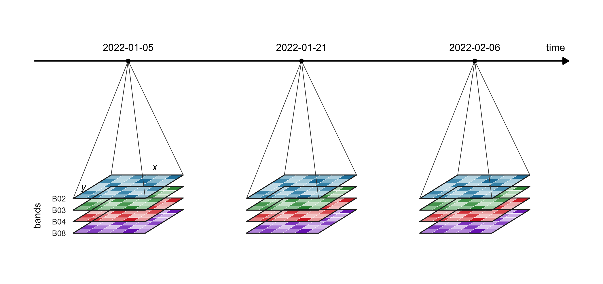
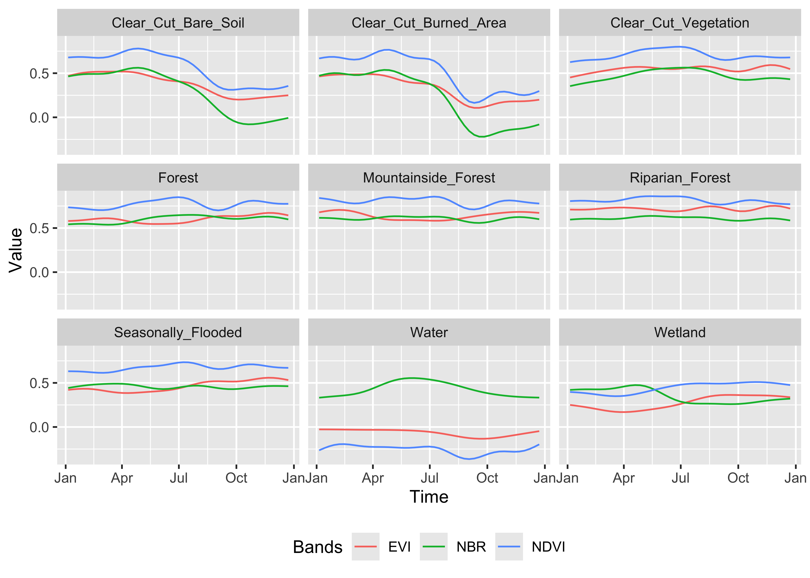
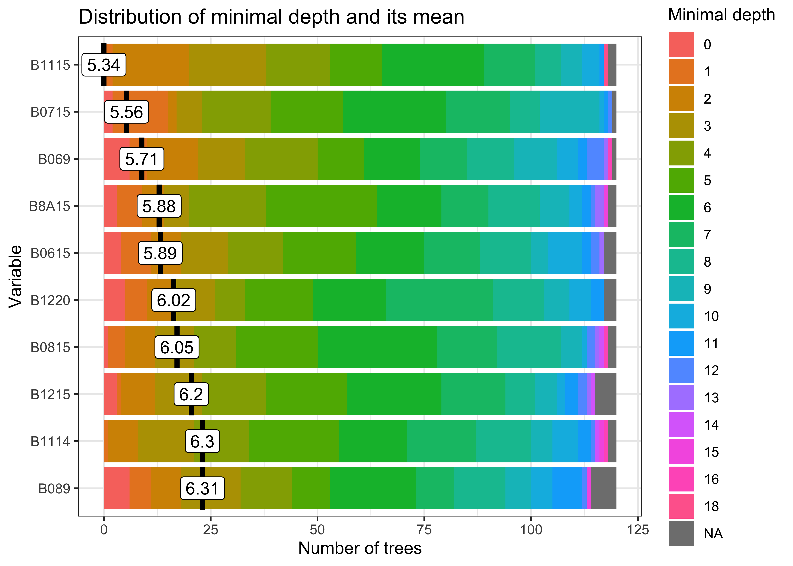

Activity data (AD) is the area and timing of land use change in REDD+ accounting. This chapter covers the quantification of uncertainty in land cover classification, change detection and spatial aggregation, which together usually make the largest contribution to total REDD+ uncertainty (Ballantyne et al., 2015).
Data Cube Framework
Classification of activity data from satellite imagery faces three main sources of uncertainty, which are spatial misalignment between sensor bands, gaps in time where cloud hides the ground, and inconsistent spectral values from changing atmospheric conditions. Scene based processing treats each image on its own and handles none of these sources systematically, so it leaves geometric breaks at tile edges, biases the record when deforestation happens during cloudy periods, and passes uncorrected atmospheric effects into the seasonal signatures used for classification.
Time Series Dimensions
A data cube arranges satellite imagery as a multidimensional array with consistent spatial, temporal and spectral dimensions, so that acquisitions of differing geometry, timing and calibration are placed on one regular grid through three linked preprocessing steps. Spatial normalization reprojects every input to a common coordinate system with uniform pixel spacing, which reduces geometric uncertainty and addresses the 5 to 10 per cent classification error found at forest boundaries, where the precision of the boundary sets the area estimate. Temporal normalization ranks scenes by atmospheric quality to fill cloud gaps and interpolate missing observations, which prevents the 15 to 25 per cent systematic underestimate of forest loss recorded when clearing coincides with persistent cloud (Hansen et al., 2014). Spectral normalization applies consistent atmospheric corrections and sensor calibrations across the series so that temporal patterns reflect real seasonal change rather than processing artefacts, which otherwise inflate classification variance by 10 to 20 per cent.
View Code
library(ggplot2)# Oblique view of flat planes: x runs right, y runs back (up-right), z stacks bands vertically.ang<-32*pi/180k<-0.62proj<-function(x, y, z=0)data.frame(u =x+k*y*cos(ang), v =k*y*sin(ang)+z)dates<-c("2022-01-05", "2022-01-21", "2022-02-06")bands<-c(B08 ="#7b2cbf", B04 ="#d62828", B03 ="#2d8f3c", B02 ="#1d7fa8")# bottom to topn_px<-6dz<-0.16# vertical gap between band planesstep<-2.4# horizontal spacing between datesaxis_v<-1.75# height of the time axis above the top plane# One fixed reflectance pattern shared by every band and date, so the reader sees# the same landscape in each plane. Values in [0, 1] shade each band's colour.set.seed(7)base<-outer(1:n_px, 1:n_px, function(i, j)0.35+0.5*((i+j)%%3==0))+matrix(runif(n_px*n_px, -0.15, 0.15), n_px)base<-pmin(pmax(base, 0.05), 1)cells<-list(); frames<-list(); fans<-list(); ticks<-list()for(dinseq_along(dates)){x_off<-(d-1)*stepfor(binseq_along(bands)){z<-(b-1)*dzfor(iin1:n_px)for(jin1:n_px){x0<-x_off+(j-1)/n_px; x1<-x_off+j/n_pxy0<-(i-1)/n_px; y1<-i/n_pxp<-proj(c(x0, x1, x1, x0), c(y0, y0, y1, y1), z)p$id<-paste(d, b, i, j); p$band<-names(bands)[b]; p$val<-base[i, j]p$order<-bcells[[length(cells)+1]]<-p}f<-proj(c(x_off, x_off+1, x_off+1, x_off), c(0, 0, 1, 1), z)f$id<-paste(d, b); f$order<-bframes[[length(frames)+1]]<-f}# Fan lines from the date tick to the four corners of the top planetop_z<-(length(bands)-1)*dzapex<-proj(x_off+0.5, 0.5, top_z+axis_v)corners<-proj(c(x_off, x_off+1, x_off+1, x_off), c(0, 0, 1, 1), top_z)fans[[length(fans)+1]]<-data.frame(u =apex$u, v =apex$v, uend =corners$u, vend =corners$v)ticks[[length(ticks)+1]]<-data.frame(u =apex$u, v =apex$v, date =dates[d])}cells<-do.call(rbind, cells); frames<-do.call(rbind, frames)fans<-do.call(rbind, fans); ticks<-do.call(rbind, ticks)# Fill colour: each band's hue, lightened by the cell valuelighten<-function(col, f){rgb_<-col2rgb(col)/255; rgb(rgb_[1]+(1-rgb_[1])*f,rgb_[2]+(1-rgb_[2])*f,rgb_[3]+(1-rgb_[3])*f)}cells$fill<-mapply(function(b, v)lighten(bands[[b]], 1-v), cells$band, cells$val)# Time axisaxis_y<-ticks$v[1]axis_df<-data.frame(u =ticks$u[1]-1.3, v =axis_y, uend =ticks$u[3]+1.3, vend =axis_y)# Labels for the first stacktop_z<-(length(bands)-1)*dzlab_x<-proj(0.5, 1.2, top_z+0.05)# along the back edge of the top planelab_y<-proj(-0.12, 0.5, top_z)# along the left edge of the top planeband_lab<-do.call(rbind, lapply(seq_along(bands), function(b){p<-proj(-0.08, 0, (b-1)*dz); data.frame(u =p$u, v =p$v, lab =names(bands)[b])}))p<-ggplot()+geom_polygon(data =cells[order(cells$order), ], aes(u, v, group =id), fill =cells$fill[order(cells$order)], colour ="white", linewidth =0.15)+geom_polygon(data =frames[order(frames$order), ], aes(u, v, group =id), fill =NA, colour ="#222222", linewidth =0.6)+geom_segment(data =fans, aes(u, v, xend =uend, yend =vend), colour ="#444444", linewidth =0.35)+geom_segment(data =axis_df, aes(u, v, xend =uend, yend =vend), linewidth =0.8, arrow =arrow(length =unit(0.3, "cm"), type ="closed"))+geom_point(data =ticks, aes(u, v), size =2.2)+geom_text(data =ticks, aes(u, v+0.14, label =date), size =4.6, vjust =0)+annotate("text", x =axis_df$uend-0.05, y =axis_y+0.14, label ="time", hjust =1, vjust =0, size =4.6)+annotate("text", x =lab_x$u, y =lab_x$v, label ="x", size =4.4, fontface ="italic")+annotate("text", x =lab_y$u, y =lab_y$v, label ="y", size =4.4, fontface ="italic")+geom_text(data =band_lab, aes(u-0.02, v, label =lab), hjust =1, size =3.6, colour ="#333333")+annotate("text", x =band_lab$u[1]-0.42, y =mean(band_lab$v), label ="bands", angle =90, size =4.4)+coord_equal(clip ="off")+theme_void()+theme(plot.background =element_rect(fill ="white", colour =NA), plot.margin =margin(10, 10, 10, 10))p

Figure 3.1: Geometry of a satellite time series data cube. Each date on the time axis holds a stack of spectral band images (B02 blue, B03 green, B04 red, B08 near infrared) on one shared pixel grid (x, y), so every pixel carries a full spectral time series. Spatial normalisation keeps the grids aligned across dates, temporal normalisation fills the dates lost to cloud, and spectral normalisation keeps values comparable between planes, which is why the preprocessing in this chapter acts along each of these three dimensions (Author’s illustration, 2026/09).
Under IPCC Approach 3, the data cube is the structure on which pixel level uncertainty is tracked for defensible carbon accounting. Storing class probabilities and model residuals as further attributes of the cube lets analysts map where uncertainty concentrates and direct validation sampling to the regions where it is highest.
This spatially explicit record supports compliance with ART-TREES Section 8 because it supplies the pixel level confidence estimates that Monte Carlo emission simulations need, so that uncertainty deductions are calculated from empirical probability distributions rather than conservative default values. Empirical studies show that data cube preprocessing reduces total classification uncertainty by 40 to 60 per cent compared with scene based approaches, which for a REDD+ project of 1 million \(tCO_2e\) protects $200,000 to $300,000 in revenue at a carbon price of $5 per tonne.
IPCC Approaches
The IPCC defines three approaches to collecting activity data, ordered by how spatially explicit they are and by their uncertainty (IPCC, 2019).
Approach
Data Type
Spatial Resolution
Uncertainty
Approach 1
Area statistics
Aggregated totals
Highest
Approach 2
Sample-based matrices
Point/grid sampling
Moderate
Approach 3
Wall-to-wall maps
Spatially explicit
Lowest
This chapter applies Approach 3 through satellite time series classification within a data cube, the route most ART-TREES programs take because they must monitor spatially, detect change at the pixel and link the map to emission factor strata. The data cube and machine learning workflows in Sections 3.2-3.9 carry out Approach 3 and produce the uncertainty quantification that ART-TREES Section 8 requires. The lower uncertainty of Approach 3 rests on consistent spatial alignment for wall to wall mapping, continuous time series for change detection and consistent spectral values for classification, none of which aggregated statistics (Approach 1) or sample based matrices (Approach 2) can offer because both discard spatial context.
The chapter first builds the data cube for organizing and analysing land cover data over space and time, then turns to uncertainty estimation aligned with IPCC methods. Sections 3.1 to 3.3 set out the data cube, the array structure for satellite time series, and show how spatial harmonization, temporal gap filling and spectral normalization reduce baseline uncertainty before classification begins. Sections 3.4 to 3.7 assess and improve the training samples through active learning, hierarchical clustering, class balancing and geographic coverage analysis, which address the 20 to 40 per cent of classification uncertainty that comes from inadequate or biased training data. Section 3.8 generates the probability cube and applies Bayesian spatial smoothing, which removes isolated misclassified pixels while keeping real landscape variation and usually improves validation agreement by 10 to 15 per cent over discrete pixel classification. Sections 3.9 and 3.10 apply Monte Carlo cross-validation and stratified accuracy assessment to give the out-of-sample performance estimates that ART-TREES deductions require, with attention to class specific error and the spatial distribution of uncertainty. Section 3.11 gives the complete code for preprocessing, classification and validation, the transparent record that third party verification under REDD+ standards demands.
The sections that follow show how systematic use of the data cube reduces activity data uncertainty from the 35 to 45 per cent typical of scene based processing to 15 to 25 per cent, which lowers ART-TREES uncertainty deductions and protects credit revenue while meeting the scientific standard that measurement, reporting and verification (MRV) requires.
The sits package ships with a library of connections1 to analysis-ready data collections (Analysis-Ready-Data, ARD) through the STAC protocol (SpatioTemporal Asset Catalogs), which gives programmatic access to cloud hosted imagery from AWS, Microsoft Planetary Computer, EarthData, Copernicus and other major warehouses. Raw ARD collections still present three problems for classification. Bands come at different resolutions and must be placed on a common grid without edge anomalies or gaps, revisit intervals vary with orbital geometry, platform scheduling and atmospheric conditions, and cloud leaves missing observations that corrupt the spectral time series.
For REDD+ monitoring, temporal gaps cause systematic underestimation of forest loss when clearing coincides with cloud, a known source of activity data bias that the uncertainty budget must quantify explicitly. The sits_regularize() function wraps gdalcubes operations that turn heterogeneous imagery into a regular data cube through linked spatial and temporal harmonization. Spatial harmonization reprojects all inputs to one coordinate reference system and resamples them to uniform pixel spacing, so that fusing Sentinel-1 radar with Sentinel-2 optical data, for instance, requires reprojection to the MGRS grid at a consistent resolution (typically 10m), which aligns the two geometrically and removes the co-registration errors that would otherwise enter classification uncertainty. Temporal harmonization sets fixed observation intervals (16-day, monthly, seasonal) through cloud optimized compositing, in which the algorithm ranks the scenes available in each interval by cloud cover, takes the clearest as reference and fills gaps from progressively cloudier acquisitions, while pixels under persistent cloud are flagged as NA and interpolated in time during feature extraction.
ARD Tile Grids
Sentinel-2 acquisitions are organized on the Military Grid Reference System (MGRS), which divides the globe into 60 longitudinal zones of 8° each, and within each zone into 6° latitudinal blocks that are subdivided into 110 km × 110 km tiles with 10 km overlap so that mosaics join without gaps. The tiling matters for REDD+ monitoring systems that track forest change across administrative boundaries, because tile edges introduce geometric breaks unless they are managed during data cube construction.
Landsat missions (4,5,7,8,9) use the Worldwide Reference System-2 (WRS-2), which indexes scenes by path (the descending orbital track) and row (the latitudinal frame centre), with 233 paths globally and 119 rows in each. All WRS-2 imagery is delivered geometrically corrected to the Universal Transverse Mercator (UTM) projection, which allows direct integration with the ground reference data and cadastral boundaries used in jurisdictional REDD+ accounting. Operational monitoring systems need to understand these tiling schemes for three reasons. Validation samples must account for tile boundaries to avoid spatial clustering, cross sensor fusion of Landsat and Sentinel requires explicit handling of the two grid systems, and workflows that process at native tile extents avoid needless resampling and the geometric error it adds.
This analysis follows the methods of Simoes et al. (2021), which assemble a data cube from the Microsoft Planetary Computer collection of Sentinel-2 ARD imagery for a single tile in the state of Rondônia over the full calendar year of 2022.2 After assembly, the raw imagery was normalized into a regular cube at a bi-monthly interval, as shown below. Ten multispectral bands from visible to shortwave infrared (SWIR) wavelengths (B02-B12) were specified, plus the B8A narrow near infrared (NIR) band and the CLOUD quality mask for atmospheric filtering.
View Code
# Create data cube from Microsoft Planetary Computer ARDcube_s2_raw<-sits::sits_cube( source ="MPC", collection ="SENTINEL-2-L2A", tiles ="20LMR", bands =c("B02", "B03", "B04", "B05", "B06", "B07", "B08", "B8A", "B11", "B12", "CLOUD"), start_date ="2022-01-01", end_date ="2022-12-31")# Check timelines of assembled tilessits::sits_timeline(cube_s2_raw)
3.3 Normalize Data Cube
Default sits operations assemble cubes in the cloud, but larger extents, longer periods and finer resolutions often take a long time to process. For larger cubes it is better to assemble in the cloud, download a copy of the imagery to a local drive and normalize into a regular cube from that local directory, which speeds the work and avoids network interruptions and queue delays.
Three normalization procedures produced a harmonized analysis-ready dataset. The cloud hosted imagery was first copied to local storage to speed later processing and avoid network interruptions during heavy operations, a step that matters most for large jurisdictional monitoring areas where repeated cloud access would create bottlenecks. The heterogeneous cube was then regularized in space and time with the following parameters.
Spatial resolution of 40m uniform pixel spacing, harmonizing the native 10m and 20m bands
Temporal resolution of 16-day intervals (P16D), aligned with standard seasonal monitoring cycles
Cloud compositing, in which cloud-free pixels were prioritized within each 16-day period and gaps filled through temporal interpolation
Coordinate system kept as the original UTM Zone 20S projection
This regularization addresses both the spatial misalignment between bands and the temporal gaps from cloud, the latter being a critical source of activity data bias in REDD+ monitoring when forest clearing coincides with persistent cloud cover.
Three vegetation indices were then calculated and added to the cube as further bands.
NDVI, the normalized difference vegetation index, (NIR - Red) / (NIR + Red), a measure of general vegetation vigour
NBR, the normalized burn ratio, (NIR - SWIR2) / (NIR + SWIR2), which detects burn scars and deforestation
The regularized cube holds 13 spectral attributes (10 original bands and 3 indices) in an array of 23 time steps at 40m resolution (see the cube structure below), and the full implementation is given in Section 3.11.
View Code
# Copy cube to local filescube_s2_local<-sits::sits_cube_copy( cube =cube_s2_raw, output_dir ="./assets/images/raw/")# Normalize cube from local filescube_s2_reg<-sits::sits_regularize( cube =cube_s2_local, output_dir ="./assets/images/reg/", res =40, period ="P16D", multicores =6)# Compute spectral index bands for cubecube_s2_reg<-sits::sits_apply( data =cube_s2_reg, NDVI =(B08-B04)/(B08+B04), output_dir ="./assets/images/reg/")cube_s2_reg<-sits::sits_apply( data =cube_s2_reg, NBR =(B08-B12)/(B08+B12), output_dir ="./assets/images/reg/")cube_s2_reg<-sits::sits_apply( data =cube_s2_reg, EVI =2.5*(B08-B04)/((B08+6.0*B04-7.5*B02)+1.0), output_dir ="./assets/images/reg/")# Check cube structuredplyr::glimpse(cube_s2_reg)# Plot single-date RGB imageplot(cube_s2_reg, red ="B11", green ="B8A", blue ="B02", date ="2022-07-16")
Training data quality sets classification accuracy and therefore activity data uncertainty. This chapter draws on the samples_deforestation_rondonia dataset (n=6,007 signatures) distributed with the sitsdata package, which holds nine forest disturbance classes labelled by expert visual interpretation of Sentinel-2 imagery of deforestation across Rondônia state in the Brazilian Amazon.
Clear_Cut_Bare_Soil, exposed soil after clearing
Clear_Cut_Burned_Area, burned clearing residues
Clear_Cut_Vegetation, regrowth or residual vegetation after harvest
Forest, intact forest, with Mountainside_Forest and Riparian_Forest
Water, Wetland and Seasonally_Flooded, hydrological features
The time series runs from 2022-01-05 to 2022-12-23 at 16-day intervals and holds 10 Sentinel-2 bands (B02, B03, B04, B05, B06, B07, B8A, B08, B11 and B12).
The samples_deforestation_rondonia reference dataset (n=6,007 labelled time series) was imported from the sitsdata package. The class distribution was reasonably balanced across deforestation stages, with Riparian_Forest (20.8 per cent) and Clear_Cut_Burned_Area (16.4 per cent) the most represented classes, while the rare classes Water (1.8 per cent) and Wetland (3.6 per cent) still had enough samples for model training (more than 100 observations each). Each training sample held its longitude and latitude in WGS84, a temporal extent from 2022-01-05 to 2022-12-23 (23 acquisition dates), the values of 10 Sentinel-2 bands at 16-day intervals, one of the nine class labels and a reference to the source cube.
The temporal span matches the agricultural calendar so that the seasonal course of forest to agriculture conversion is captured, including dry season clearing (May-June) followed by burning (August-September), and this coverage is what allows time series classification to separate the stages of deforestation.
Plotting the temporal trajectory of each class helps assess spectral separability, a main determinant of classification uncertainty. The sits_patterns() function fits generalized additive models (GAM) to the training data and returns smoothed temporal signatures that represent the idealized behaviour of each class, and the vegetation indices NDVI, EVI and NBR are derived first to make the signatures easier to read.
View Code
# Compute spectral indexes for training samplestraining_samples_with_indices<-samples_deforestation_rondonia|>sits::sits_apply(NDVI =(B08-B04)/(B08+B04))|>sits::sits_apply(NBR =(B08-B12)/(B08+B12))|>sits::sits_apply(EVI =2.5*(B08-B04)/((B08+6.0*B04-7.5*B02)+1.0))# Generate and plot patternstraining_samples_indices<-training_samples_with_indices|>sits::sits_select(bands =c("NDVI", "EVI", "NBR"))|>sits::sits_patterns()|>plot()

The temporal patterns (Figure X) showed distinct seasonal contrasts between classes. The three forest classes (Forest, Mountainside_Forest, Riparian_Forest) kept high and stable NDVI and EVI (above 0.7) through the year with little seasonal variation, as expected of evergreen tropical forest. Clear_Cut_Bare_Soil showed an abrupt fall in every index at the time of clearing, with NDVI dropping below 0.2. Clear_Cut_Burned_Area showed a sharp SWIR spike (NBR near -0.3) in the August to September dry season, the sign of active burning. Clear_Cut_Vegetation showed gradual recovery of NIR and NDVI through the monitoring period, the trajectory of regrowth. The Water and Wetland classes stayed at low NDVI (below 0.3) with seasonal movement in EVI that followed inundation cycles.
These contrasts form the spectral and temporal feature space for the Random Forest classification that follows, and classes with overlapping signatures, such as Seasonally_Flooded against Wetland, are known sources of confusion that need careful validation.
3.5 Classify Data Cube
Random Forest models are a robust baseline classifier for activity data because they balance computational cost with performance adequate for Tier 2-3 REDD+ requirements, and the sits_train() function trains them in parallel with default hyperparameters suited to satellite time series. The algorithm builds an ensemble of decision trees by bootstrap aggregation (bagging), in which each tree is trained on a random subset of samples and features, and the final prediction is the vote across all trees, which gives robust performance without extensive tuning, a real advantage in operational REDD+ systems where calibration time is short.
A Random Forest classifier was trained with the following hyperparameters.
Number of trees, 120, balancing accuracy against computational cost
Variables per split (mtry), 10, approximately the square root of p where p is the total number of features
Training samples, 6,007 labelled time series across 9 classes
Input features, 10 spectral bands at 23 dates, giving 230 features per sample
View Code
# Train model using Random Forest algorithmmodel_randomForest<-sits::sits_train( samples =samples_deforestation_rondonia, ml_method =sits::sits_rfor( num_trees =120, mtry =10))# plot the model resultsplot(model_randomForest)

Variable Importance
The feature importance ranking (Figure X) showed which bands and dates contributed most to separating the classes. The SWIR bands (B11, B12) ranked highest, confirming their value for deforestation detection through their sensitivity to bare soil, and the NIR bands (B8A, B08) ranked second because they respond to vegetation structure and stand in for biomass. Temporal depth mattered, in that observations later in the season, from September to November, carried weight through the seasonal signal that follows clearing, and the red edge bands (B05-B07) were of moderate importance and useful for detecting subtle degradation.
The ranking has three uses. It informs sensor planning, in that SWIR channels deserve priority in future satellite missions, it attributes uncertainty, because errors in the SWIR bands pass more strongly into the final classification, and it guides transfer learning, because SWIR coverage must be kept when a model is adapted to a new region.
3.6 Probability Data Cube
Classification output is produced as a probability cube rather than a map of discrete labels so that the model’s uncertainty is kept. The sits_classify() function applies a trained model to a regularized data cube in fault tolerant parallel processing and writes one probability layer per class, which records the model’s confidence at each pixel.
The trained Random Forest was applied to the regularized cube in parallel across 4 processing cores with 16GB of memory. Instead of discrete class labels, the classification produced a probability cube in which each pixel holds membership probabilities for all nine classes, summing to 1.0.
A discrete classification discards this uncertainty information, whereas a probability cube keeps the model’s confidence at every pixel and so allows four things. A low maximum probability marks high uncertainty at class boundaries and in mixed pixels, so uncertainty can be mapped. Regions of high uncertainty can be given denser sampling during accuracy assessment. The probability distributions feed directly into the Monte Carlo emission uncertainty simulations of Chapter 4. A probability time series also detects gradual transitions that discrete labelling misses.
The Forest class probability layer (Figure X) showed high confidence (probability above 0.9, dark green) in intact forest and lower probabilities (0.4-0.7, light green) along forest edges and in degraded patches, spatial patterns of uncertainty that inform the validation stratification and area estimation that follow.
View Code
# Classify data cubecube_s2_probs<-sits::sits_classify( data =cube_s2_reg, ml_model =model_randomForest, output_dir ="./assets/images/probs/", version ="rf-1228", # adds suffix to output filename multicores =4, memsize =16)plot(cube_s2_probs, labels ="Forest", palette ="YlGn")
Each pixel in the probability cube holds n probability values, where n is the number of classes, summing to 1.0. A low maximum probability marks a pixel of high classification uncertainty, usually at a class boundary, in a mixed pixel, or where the spectral and temporal signature departs from the training data. Spatial patterns of low confidence also expose systematic classification errors, so the probability cube is the foundation for uncertainty quantification in the rest of the workflow.
3.7 Training Data Enhancements
Classification accuracy in REDD+ monitoring depends on training sample quality. Large, well labelled datasets improve model performance whatever the algorithm, while noisy or mislabelled samples lower accuracy and inflate activity data uncertainty (Frénay & Verleysen, 2013; Maxwell et al., 2018). This section shows methods for finding problematic samples, reducing class imbalance and addressing geographic variance before models are retrained.
Pixel Entropy Sampling
Active learning uses pixel level classification uncertainty to improve accuracy through repeated rounds of model refinement (Cao et al., 2012; Crawford et al., 2013). For a finite set of alternative classes, the expected conflict between them is given by the Shannon entropy (Shannon, 1948), which describes the spread of class membership probabilities at each pixel. The sits_uncertainty() function computes four uncertainty metrics, of which entropy is
where \(Pr(i)\) is the highest membership probability for pixel \(i\) across \(n\) classes. For REDD+ work the margin of confidence usually gives the most useful result, for instance in marking transition zones where forest degradation or regeneration blurs the spectral difference between classes. The margin is the difference between the highest and second highest class probabilities (Margin = p₁ - p₂), and a value near zero marks a pixel where the classifier cannot separate two competing classes.
The margin uncertainty cube showed where classification was hardest. High uncertainty concentrated along forest to agriculture boundaries where mixed pixels held both forest and bare soil signatures, within wetland complexes where spectral similarity confused the Seasonally_Flooded and Wetland classes, and across regeneration zones where Clear_Cut_Vegetation resembled early Forest regrowth. To improve these areas systematically, 300 candidate locations for further training samples were selected with a minimum uncertainty threshold of margin below 0.4 and a 10-pixel minimum spacing to spread them geographically.
Once such samples are labelled by expert interpretation and merged with the original training set for another round of training, uncertainty usually converges within 2-3 iterations.
After spectral signatures were extracted for the 300 high uncertainty locations and the Random Forest was retrained on the expanded dataset (n_total = 6,307), the uncertainty maps of the two model versions were compared. Side by side, the maps differed subtly, with version 2 showing slightly less uncertainty in the forest to wetland transitions that had been ambiguous. The convergence metrics gave the opposite result, in that mean uncertainty rose slightly in version 2, a pattern that suggested the added samples had exposed class overlaps that went undetected before rather than resolving them, real spectral ambiguity that was present but not visible in the original training set.
The lesson for REDD+ is that adding training samples does not always reduce uncertainty, and convergence needs several iterations of deliberate sample selection until the uncertainty metrics settle.
View Code
# Find samples with high uncertaintynew_samples_locations<-sits::sits_uncertainty_sampling( uncert_cube =cube_s2_uncertainty, n =300, min_uncert =0.4, sampling_window =10)# Visualize new training pointssits::sits_view(new_samples_locations)sf::st_write(new_samples_locations, "./assets/samples/new_samples_location.gpkg")
View Code
# Extract new spectral signaturesnew_samples<-sits::sits_get_data( cube =cube_s2_reg, samples =new_samples_locations)#new_samples$label <- "Wetland"new_samples_aligned<-sits_select(data =new_samples, bands =c("B02", "B03", "B04", "B05", "B06", "B07", "B08", "B11", "B12", "B8A"))# Merge with original samplesnew_samples_merge<-dplyr::bind_rows(samples_deforestation_rondonia,new_samples_aligned)# Train new model & evaluatemodel_randomForest_v2<-sits::sits_train( samples =new_samples_merge, ml_method =sits::sits_rfor(num_trees =120,mtry =10))# Classify new cube# Classify data cubecube_s2_probs_v2<-sits::sits_classify( data =cube_s2_reg, ml_model =model_randomForest_v2, output_dir ="./assets/images/probs/", version ="rf-1228-v2", # adds suffix to output filename multicores =4, memsize =16)# Derive new uncertainty cube and comparecube_s2_uncertainty_v2<-sits::sits_uncertainty(cube_s2_probs_v2, type ="margin", output_dir ="./assets/images/uncertainty_v2/", multicores =4, memsize =16)# Visualize side-by-sideplot(cube_s2_uncertainty, palette ="Reds")plot(cube_s2_uncertainty_v2, palette ="Oranges")
Short of relabelling classes, the method above shows the iterative workflow in which new samples are added and models retrained until uncertainty stabilizes. For ART-TREES compliance, lower uncertainty directly lowers the activity data deduction and simplifies third party verification.
Hierarchical Clustering
Two clustering approaches evaluate training data quality, chosen by dataset size, agglomerative hierarchical clustering (AHC) for datasets under 10,000 samples and self-organizing maps (SOM) for larger collections (Gonçalves et al., 2008; Neagoe et al., 2014; Yao et al., 2016). The two differ greatly in computational cost, because AHC runs at O(n²), so its cost grows with the square of the sample count and it needs substantial memory, while SOM scales linearly and so suits operational REDD+ monitoring systems that process large reference datasets.
Hierarchical clustering computes the dissimilarity between samples with dynamic time warping (DTW), a distance measure that allows for shifts in timing between seasonal patterns and so measures differences between satellite time series reliably (Maus et al., 2019; Petitjean et al., 2012). The sits_cluster_dendro() function builds a dendrogram from DTW distance with Ward’s linkage, which merges clusters so as to minimize within cluster variance.
Here the method was applied to NDVI and EVI time series of 23 observations per sample. The adjusted Rand index (Rand, 1971) identified seven as the best cluster count, and the cluster composition showed distinct groupings that revealed class separability and possible quality problems.
Cluster 4 was dominated by the Clear-cut classes, with 705 Bare_Soil and 874 Burned_Area samples (1,579 in total), which showed the strong spectral and temporal similarity among cleared areas, while Cluster 2 held mainly forest types, with 732 Forest, 327 Riparian and 145 Mountainside samples (1,204 in total), confirming that these classes share the same seasonal character. Cluster 5, by contrast, was the least pure and mixed several classes, which suggested its 89 samples occupied ambiguous spectral space as mislabelled observations, edge pixels of mixed cover, or transitional states that discrete classes do not represent well. Cluster 5 was removed from the training set entirely, and after only the dominant label was kept within each remaining cluster through sits_cluster_clean(), the refined dataset held 5,893 samples of improved class purity, with only 25 further samples removed from the other clusters.
View Code
# Remove cluster#5 from the samplesclusters_new<-dplyr::filter(clusters, cluster!=5)clusters_clean<-sits::sits_cluster_clean(clusters_new)# Check clusters samples frequencysits::sits_cluster_frequency(clusters_clean)# Generate SOM with optimal grid dimensionssom_map<-sits::sits_som_map(training_samples_with_indices, grid_xdim =10, grid_ydim =10)# Clean samples by removing mixed neuronssamples_clean<-sits::sits_som_clean_samples(som_map)# Visualize sample clustering & class confusionssom_eval<-sits::sits_som_evaluate_cluster(som_map)plot(som_eval)plot(som_map)
For datasets above 10,000 samples, self-organizing maps offer a cheaper alternative, an unsupervised method that projects high dimensional time series onto a two dimensional grid while keeping neighbouring samples together. The sits_som_map() function, set to 10×10 neurons (100 cells) with the DTW distance, places similar signatures on nearby neurons, with learning parameters alpha=1.0 and rlen=20 following standard Kohonen practice. Applied to the full spectral and temporal dataset (10 bands × 23 dates), the SOM evaluation plot shows how the classes are distributed across the grid, which indicates data quality and class separability.
A neuron of a single class, shown as a cell of one colour, marks a well separated class with a distinct signature, a mixed neuron of several colours marks spectral confusion that needs investigation, and an empty grey cell marks a gap in feature space that no training sample covers. The SOM frequency map of neuron activation picks out dense neurons that hold many similar samples and sparse neurons that may hold outliers or rare spectral conditions. The approach is most valuable for operational REDD+ systems that process large reference datasets from crowdsourcing or automated collection, where quality control is hard at scale.
Samples from mixed neurons were flagged for expert review, and the cleaning through sits_som_clean_samples() removed observations from neurons that held more than one class, which improved dataset purity while keeping the within class variation that a model needs to generalize.
Class Imbalances
An imbalanced training set biases a classifier towards the classes with most samples and inflates omission error for rare forest types, a particular problem when those rare classes are the high carbon forests that REDD+ accounting most needs. The original dataset is markedly imbalanced, with Riparian_Forest at 20.8 per cent and Clear_Cut_Burned_Area at 16.4 per cent dominating while Water at 1.8 per cent and Wetland at 3.6 per cent are severely under-represented. A ratio of 11:1 between the largest and smallest classes leads Random Forest to under-predict rare classes because tree construction implicitly weights classes by frequency.
A hybrid resampling strategy was applied through sits_reduce_imbalance(), which combines oversampling and undersampling. The synthetic minority oversampling technique (SMOTE) generated synthetic samples for rare classes below 200 observations by interpolating between existing samples in feature space to produce realistic time series, while random undersampling removed samples from majority classes above 400 observations to match the minority class frequencies. This brought every class toward a 200-400 sample range and reduced the ratio of largest to smallest class from 11:1 to 2:1, while avoiding the weakness of either strategy alone, since oversampling kept the informative data that discarding majority samples would lose and undersampling kept the computational load down.
The summary after balancing showed all nine classes within the target range, and comparing the SOM before and after balancing showed the grid change from large clusters dominated by Riparian_Forest and Clear_Cut_Burned_Area to a more uniform spread with better representation of the minority classes.
A balanced training set makes the classifier more sensitive to rare forest types such as degraded riparian forest and seasonally flooded forest, which may hold high carbon stocks over a small area, and so reduces omission error in the activity data, a critical source of conservative bias in emission estimates under REDD+ accounting.
View Code
# Balance samples across classessamples_balanced<-sits::sits_reduce_imbalance( samples =training_samples_with_indices, n_samples_over =200, # Oversample rare classes n_samples_under =400, # Undersample common classes multicores =4)# Re-evaluate using SOM clusteringsom_map_balanced<-sits::sits_som_map( data =samples_balanced, grid_xdim =10, grid_ydim =10, alpha =1.0, distance ="dtw", rlen =20)# Store estimates in tibblesom_eval_balanced<-sits::sits_som_evaluate_cluster(som_map_balanced)# Visualize resultsplot(som_eval)plot(som_eval_balanced)summary(samples_balanced)
Training samples must cover the spatial variation of the whole monitoring jurisdiction, because clustered sampling leaves gaps where prediction means extrapolating beyond the conditions the training data covered and uncertainty is higher (Meyer & Pebesma, 2022). The sits_geo_dist() function measures this coverage by comparing two distance distributions, the distances between training samples and the distances from each prediction pixel in the study area to its nearest training sample. Ideally the two distributions align closely, meaning every prediction location lies within the same range of distances as the training samples lie from each other, and a mismatch reveals regions of insufficient spatial coverage.
The plot of the two curves identifies geographic gaps wherever the prediction to sample curve extends beyond the sample to sample curve, marking regions that need more sampling. In jurisdictional REDD+ monitoring these gaps often fall in remote protected areas with little field access, in recent deforestation hotspots that postdate the sampling campaign, and at ecological boundaries whose spectral character departs from the main training distribution. Filling them through targeted field campaigns reduces spatial uncertainty and improves model transfer across the whole monitoring domain, so that accuracy stays consistent rather than falling in the under-sampled regions where verification may matter most.
View Code
# Derive jurisdiction boundarybbox_cube<-sits::sits_bbox(cube_s2_reg)bbox_sf<-sf::st_bbox(c(xmin =aoi$xmin, ymin =aoi$ymin, xmax =aoi$xmax, ymax =aoi$ymax), crs =sf::st_crs(aoi$crs))# Convert to sf aoi<-sf::st_as_sf(sf::st_as_sfc(bbox_sf))# Assess geographic coveragedistances<-sits::sits_geo_dist(training_samples_with_indices, roi =aoi)plot(distances)
Where the distributions do not match, areas with few nearby training samples carry higher classification uncertainty and need either more field sampling or explicit quantification of that uncertainty during accuracy assessment.
Noise Filtering
Satellite time series carry noise from residual cloud and aerosol, sensor artefacts and co-registration error, random variation that hides the real seasonal pattern. The Whittaker smoother (sits_whittaker()) fits a penalized least squares regression that trades fidelity to the observed values against smoothness over time, controlled by the parameter lambda, where a low value keeps more detail and a high value smooths more strongly.
Applied here with a conservative lambda=0.5, the filter kept real rapid changes such as abrupt deforestation while removing the high frequency noise that had lowered classification accuracy. Comparing filtered against original series for representative classes showed that the smoothing clarified the underlying trend, in that Clear_Cut_Bare_Soil showed its declining NDVI with sharp fluctuations reduced, Forest kept its stable high NDVI with minor fluctuations removed, Clear_Cut_Burned_Area showed the abrupt drop at burning more clearly, and Seasonally_Flooded kept its seasonal oscillation with less measurement noise.
For REDD+ work a conservative lambda ≤ 1.0 is recommended, so that short clearing events that are real forest loss are not smoothed away, and the filtered training samples then give cleaner inputs for model training while keeping the temporal dynamics that accurate activity data classification needs. Implementation details for all enhancement procedures are given in Section 3.11.
Over-smoothing with a high lambda removes real seasonal variation and weakens the model’s ability to separate classes, whereas conservative filtering (lambda ≤ 1.0) balances noise reduction against pattern preservation (Atkinson et al., 2012; Zhou et al., 2016).
Quality controlled training data reduces classification uncertainty directly, by cutting the systematic error from mislabelling and improving how well the model generalizes. Together with the cross-validation of Section 3.8 and the accuracy assessment of Section 3.9, these enhancement methods give a defensible basis for quantifying activity data uncertainty under ART-TREES.
3.8 Smooth Data Cube
Pixel based classification produces isolated misclassified pixels, called salt-and-pepper noise, because of spectral variation within classes and mixed pixels. An isolated pixel labelled differently from all its neighbours usually reflects over-fitting to the training data rather than real landscape variation, and it inflates area uncertainty and complicates change detection in REDD+ work. The sits_smooth() function addresses this through Bayesian post-processing that uses the neighbouring pixels to refine each probability estimate. The algorithm computes a spatially weighted adjustment from the composition of the neighbourhood, then updates each pixel’s probabilities by Bayesian inference that combines the original model estimate with the spatial prior drawn from the surrounding pixels, giving a refined probability cube with fewer outliers that still keeps the small patches that are real landscape features.
The smoothed Forest probability map (Figure X) showed the effect, with high confidence pixels (probability above 0.9) in dark green in intact forest cores and moderate probabilities (0.4-0.7) in lighter green along forest edges, reflecting real mixed pixels rather than random noise.
Smoothed probability map for class Forest.
Smoothing Risks
Spatial smoothing moves activity data uncertainty in competing directions. It reduces random error by removing the isolated misclassifications that inflate variance, and it improves validation agreement by matching the scale at which a human interpreter reads the landscape, but it can introduce spatial bias by smoothing over real small scale variation, and it changes the shape of the pixel level probability distributions and so of the uncertainty estimates drawn from them. For REDD+ reporting, a smoothed probability cube usually yields lower reported uncertainty because classification noise is lower, but verification bodies may require documentation of the smoothing parameters to show that the choice preserved ecologically meaningful patterns.
The final classified map is derived from the smoothed probability cube by maximum likelihood labelling, in which each pixel receives the class with the highest posterior probability. The sits_label_classification() function makes this deterministic assignment while keeping the link to the underlying probability distributions, so that uncertainty information stays available for the Monte Carlo emission simulations later. Implementation details for smoothing and labelling are given in Section 3.10.
Classified cube obtained by Random Forest model.
The classified cube (Figure X) with its nine disturbance classes is the activity data foundation for REDD+ accounting, but uncertainty quantification needs more than discrete classification. Sections 3.2-3.5 show more advanced operations with the caret(Kuhn, 2011), ForestToolbox(Tarazona Coronel et al., 2021) and terra(Hijmans, 2025) packages, which extract pixel level probability distributions for Monte Carlo sampling (Section 3.3), implement stratified validation with area adjusted accuracy assessment (Section 3.4) and calibrate Random Forest hyperparameters through iterative uncertainty minimization (Section 3.5).
3.8 Cross-Validation
Cross-validation measures how well a model generalizes by splitting the training data into independent subsets for repeated testing. Bringing sits time series into a caret validation workflow requires converting the nested time series structure into a tabular feature matrix suited to Monte Carlo simulation, and for each of the 6,007 training samples six statistics are taken over time, the mean and standard deviation of NIR (B8A), SWIR (B11) and NDVI. This reduces the 230 dimensional input (10 bands × 23 dates) to a 6 dimensional space of summary statistics that allows rapid repeated testing while keeping the power to separate the nine disturbance classes. The simplified representation loses some temporal detail compared with the full series that sits classifies, but it gives the speed that a Monte Carlo simulation of thousands of iterations needs for ART-TREES compliance.
The code below extracts the statistical summaries from the sits time series for use in caret.
Monte Carlo leave-group-out cross-validation (LGOCV) was run to measure model stability and generalization through repeated random partitioning. For demonstration the simulation used 75 per cent calibration and 25 per cent validation splits over 10 iterations, whereas ART-TREES requirements for activity data uncertainty demand 10,000 iterations for statistically robust estimates, an increase needed to stabilize the mean performance, quantify the variance between partitions, catch rare failures in particular train and test combinations, and meet the significance thresholds of MRV reporting. Each iteration partitioned the feature dataset at random while keeping class proportions, fitted a Random Forest of 120 trees tuned on the Kappa statistic (which allows for class imbalance better than raw accuracy) and predicted the withheld validation set.
The cross-validation summary showed a stable model across iterations, with mean accuracy of 70.9 per cent (standard deviation 1.5 per cent) and mean Kappa of 0.656 (standard deviation 0.017). The low standard deviations showed consistent performance whatever the partition and suggested the model generalized well to unseen data, though a Kappa near 0.66 left room for improvement through more training samples in the confused classes, hyperparameter tuning, or ancillary data such as elevation or soil maps.
These metrics feed directly into ART-TREES Equation 11 for the activity data uncertainty deduction, where the relative standard deviation of the cross-validated predictions sets the half-width of the 90 per cent confidence interval used in credit calculations. The 10 iteration demonstration is a proof of concept, and operational use requires thousands of iterations to meet the ART-TREES confidence requirements.
View Code
# Configure Monte Carlo simulationmc_simulation<-caret::trainControl( method ="LGOCV", number =10, # Increase to 10,000 iterations for ART-TREES submissions p =0.75, # 75:25% split savePredictions ="final", classProbs =TRUE, summaryFunction =caret::multiClassSummary)# Train over monte carlo simulationset.seed(456)model_randomRandom_mc<-caret::train(label~., data =train_features, method ="rf", trControl =mc_simulation, metric ="Kappa", ntree =120)# Summarize stabilitymodel_randomRandom_mc_summary<-data.frame( metric =c("Accuracy", "Kappa"), mean =c(mean(model_randomRandom_mc$resample$Accuracy), mean(model_randomRandom_mc$resample$Kappa)), sd =c(sd(model_randomRandom_mc$resample$Accuracy), sd(model_randomRandom_mc$resample$Kappa)))flextable::flextable(model_randomRandom_mc_summary)|>flextable::fontsize(size =9, part ="body")|>flextable::fontsize(size =8, part ="footer")|>flextable::set_table_properties(layout ="autofit", width=1, align ="center")
metric
mean
sd
Accuracy
0.7091516
0.01467986
Kappa
0.6560266
0.01749026
3.9 Accuracy Assessment
To measure classification performance against independent reference data with all nine disturbance classes adequately represented, the feature dataset was split into training (80 per cent, n≈4,806) and test (20 per cent, n≈1,201) subsets by stratified random sampling that kept the original class proportions in both, which prevented rare classes being over or under represented in the evaluation, a real risk given the 11:1 imbalance between largest and smallest classes. All class labels were converted to factors with the same levels in both sets, so that a rare class present in only one subset would not cause prediction failure during validation, a common fault with imbalanced data. The model trained on the 80 per cent calibration set with 120 Random Forest trees was then evaluated on the withheld 20 per cent test set to produce the confusion matrix.
The confusion matrix compared predicted with reference labels for the 1,201 withheld test samples and gave both overall accuracy and the class specific error that REDD+ uncertainty assessment needs. Overall accuracy was 73.9 per cent (95 per cent confidence interval 71.4 to 76.4 per cent) with Kappa of 0.692, significantly better than random assignment (p < 2.2e-16) and indicating moderate agreement beyond chance. Class performance varied widely, in that the best classes reached sensitivity above 85 per cent, with Water at 100 per cent sensitivity and 95.5 per cent precision through its distinctive spectral signature, Riparian_Forest at 88 per cent sensitivity despite making up 20.8 per cent of the dataset, and Forest at 86.5 per cent, the core forest discrimination. Clear_Cut_Burned_Area at 73.5 per cent sensitivity, Seasonally_Flooded at 69.2 per cent and Clear_Cut_Bare_Soil at 69.2 per cent were moderate, while Mountainside_Forest was severely under-predicted at only 7.1 per cent sensitivity.
The failure on Mountainside_Forest at 7.1 per cent sensitivity came from its low prevalence in the training set (3.5 per cent of samples), its spectral overlap with the other forest types, and topographic effects that spectral features alone do not capture. The main confusions were between Clear_Cut_Bare_Soil and Clear_Cut_Burned_Area (72 misclassifications in total) through their similar bare soil signatures, among the forest types (Forest, Mountainside_Forest, Riparian_Forest) through shared vegetation character, and between the hydrological classes Seasonally_Flooded and Wetland through overlapping seasonal inundation. For REDD+, 73.9 per cent accuracy corresponded to roughly 26 per cent activity data uncertainty before the ART-TREES area adjustment. Class specific error, above all the Mountainside_Forest omissions, would inflate uncertainty in jurisdictions with strong relief, which calls for more training samples in rare classes, stratified validation with denser sampling in confused regions, or topographic variables from a digital elevation model (DEM) as further features. Implementation details for accuracy assessment are given in Section 3.10.
View Code
# Ensure consistent factor levelsall_classes<-unique(train_features$label)# Stratified partitionset.seed(789)train_idx<-caret::createDataPartition(train_features$label, p =0.8, list =FALSE)train_data<-train_features[train_idx, ]test_data<-train_features[-train_idx, ]# Ensure labels are factors with same levelstrain_data$label<-factor(train_data$label, levels =all_classes)test_data$label<-factor(test_data$label, levels =all_classes)# Train modelaccuracy_model<-caret::train(label~., data =train_data, method ="rf", ntree =120, importance =TRUE, trControl =caret::trainControl(method ="none"))# Predictpredictions<-predict(accuracy_model, test_data)# Ensure predictions have same levelspredictions<-factor(predictions, levels =all_classes)
This chapter set out a framework for quantifying activity data uncertainty in REDD+ monitoring. It covered the data cube as the structure for land cover analysis over space and time, the requirements of IPCC Approach 3, pixel level uncertainty tracking through model residuals for adaptive sampling, Random Forest optimization through Monte Carlo calibration, and accuracy assessment through confusion matrices with area adjustment.
Activity data gives the area of change and allometry converts that area to biomass, so the combined uncertainty is
where the covariance term captures the spatial correlation between classification error and biomass estimation error.
Atkinson, P. M., Jeganathan, C., Dash, J., & Atzberger, C. (2012). Inter-comparison of four models for smoothing satellite sensor time-series data to estimate vegetation phenology. Remote Sensing of Environment, 123, 400–417. https://doi.org/10.1016/j.rse.2012.04.001
Ballantyne, A., Andres, R., Houghton, R., Stocker, B., Wanninkhof, R., Anderegg, W., Cooper, L., DeGrandpre, M., Tans, P., Miller, J., & al., et. (2015). Audit of the global carbon budget: Estimate errors and their impact on uptake uncertainty. Biogeosciences (Online), 12(8), 2565–2584.
Cao, S., Yu, Q., & Zhang, J. (2012). Automatic division for pure/mixed pixels based on probabilities entropy and spatial heterogeneity. 2012 First International Conference on Agro-Geoinformatics (Agro-Geoinformatics), 1–4.
Crawford, M. M., Tuia, D., & Yang, H. L. (2013). Active learning: Any value for classification of remotely sensed data? Proceedings of the IEEE, 101(3), 593–608.
Frénay, B., & Verleysen, M. (2013). Classification in the presence of label noise: A survey. IEEE Transactions on Neural Networks and Learning Systems, 25(5), 845–869.
IPCC. (n.d.). 2013 revised supplementary methods and good practice guidance arising from the kyoto protocol.
IPCC. (2012). Report of the conference of the parties serving as the meeting of the parties to the kyoto protocol on its seventh session,. FCCC/KP/CMP/2011/10(Durban Meeting November 28th to December 11th, 2011), 824.
Maxwell, A. E., Warner, T. A., & Fang, F. (2018). Implementation of machine-learning classification in remote sensing: An applied review. International Journal of Remote Sensing, 39(9), 2784–2817.
Simoes, R., Camara, G., Queiroz, G., Souza, F., Andrade, P. R., Santos, L., Carvalho, A., & Ferreira, K. (2021). Satellite image time series analysis for big earth observation data. Remote Sensing, 13(13), 2428.
Tarazona Coronel, Y., Zabala, A., Pons, X., Broquetas, A., Nowosad, J., & A. Zurqani, H. (2021). Fusing landsat and SAR data for mapping tropical deforestation through machine learning classification and the PVts-β non-seasonal detection approach. https://doi.org/10.1080/07038992.2021.1941823
UNFCCC, C. (2010). Report of the conference of the parties on its fifteenth session, held in copenhagen from 7 to 19 december 2009. FCCC/CP/2009/11/Add. 1.
Zhou, J., Jia, L., Menenti, M., & Gorte, B. (2016). On the performance of remote sensing time series reconstruction methods – a spatial comparison. Remote Sensing of Environment, 187, 367–384. https://doi.org/10.1016/j.rse.2016.10.025
In version 1.5.3, sits supports access to the following ARD image cloud providers.
Amazon Web Services (AWS), open data Sentinel-2/2A Level-2A collections for the Earth’s land surface.
Brazil Data Cube (BDC), open data collections of Sentinel-2/2A, Landsat-8, CBERS-4/4A and MOD13Q1 products for Brazil, organized as regular data cubes.
Copernicus Data Space Ecosystem (CDSE), open data collections of Sentinel-1 RTC and Sentinel-2/2A images.
Digital Earth Africa (DEAFRICA), open data collections of Sentinel-1 RTC, Sentinel-2/2A and Landsat-5/7/8/9 for Africa, with ALOS_PALSAR mosaics, DEM_COP_30, NDVI_ANOMALY based on Landsat data, and monthly and daily rainfall data from CHIRPS.
Digital Earth Australia (DEAUSTRALIA), open data ARD collections of Sentinel-2A/2B and Landsat-5/7/8/9 images, yearly geomedians of Landsat 5/7/8 images, and yearly fractional land cover from 1986 to 2024.
Harmonized Landsat-Sentinel (HLS), an open data collection from NASA that processes Landsat 8 and Sentinel-2 imagery to a common standard.
Microsoft Planetary Computer (MPC), open data collections of Sentinel-1 GRD, Sentinel-1 RTC, Sentinel-2/2A and Landsat-4/5/7/8/9 images for the Earth’s land areas, with the Copernicus DEM-30, the MOD13Q1, MOD10A1 and MOD09A1 products, and the Harmonized Landsat-Sentinel collections (HLSL30 and HLSS30).
Swiss Data Cube (SDC), a collection of Sentinel-2/2A and Landsat-8 images for Switzerland.
Terrascope, a cloud service with EO products, including the ESA World Cover map.
USGS, Landsat-4/5/7/8/9 collections available in AWS, which require access payment.
sits also supports Planet monthly mosaics stored as local files. For a full description of the providers and collections supported by sits, run sits_list_collections().↩︎
For the hardest uncertainty tasks, which need longitudinal analysis over long timelines (1984-2024), such as separating wildfire uncertainty and the year to year variability of natural disturbance, practising data cube operations on Landsat imagery is recommended (IPCC, n.d., p. O.9; 2012, p. 847; 2019, p. 2.67; UNFCCC, 2010, pp. 17–18).↩︎
Source Code
---title: "3. Activity Data"format: docx: reference-doc: ../references/style.docx highlight-style: githubexecute: echo: true warning: false message: falseknitr: opts_chunk: prefer-html: true dev: "png" dpi: 300bibliography: ../references/references.bibcsl: ../references/apa.csl---## Overview {.unnumbered}Activity data (AD) is the area and timing of land use change in REDD+ accounting. This chapter covers the quantification of uncertainty in land cover classification, change detection and spatial aggregation, which together usually make the largest contribution to total REDD+ uncertainty [@ballantyne2015audit].### Data Cube FrameworkClassification of activity data from satellite imagery faces three main sources of uncertainty, which are spatial misalignment between sensor bands, gaps in time where cloud hides the ground, and inconsistent spectral values from changing atmospheric conditions. Scene based processing treats each image on its own and handles none of these sources systematically, so it leaves geometric breaks at tile edges, biases the record when deforestation happens during cloudy periods, and passes uncorrected atmospheric effects into the seasonal signatures used for classification.### Time Series DimensionsA data cube arranges satellite imagery as a multidimensional array with consistent spatial, temporal and spectral dimensions, so that acquisitions of differing geometry, timing and calibration are placed on one regular grid through three linked preprocessing steps. Spatial normalization reprojects every input to a common coordinate system with uniform pixel spacing, which reduces geometric uncertainty and addresses the 5 to 10 per cent classification error found at forest boundaries, where the precision of the boundary sets the area estimate. Temporal normalization ranks scenes by atmospheric quality to fill cloud gaps and interpolate missing observations, which prevents the 15 to 25 per cent systematic underestimate of forest loss recorded when clearing coincides with persistent cloud (Hansen et al., 2014). Spectral normalization applies consistent atmospheric corrections and sensor calibrations across the series so that temporal patterns reflect real seasonal change rather than processing artefacts, which otherwise inflate classification variance by 10 to 20 per cent.```{r}#| label: fig-datacube#| fig-cap: "Geometry of a satellite time series data cube. Each date on the time axis holds a stack of spectral band images (B02 blue, B03 green, B04 red, B08 near infrared) on one shared pixel grid (x, y), so every pixel carries a full spectral time series. Spatial normalisation keeps the grids aligned across dates, temporal normalisation fills the dates lost to cloud, and spectral normalisation keeps values comparable between planes, which is why the preprocessing in this chapter acts along each of these three dimensions (Author's illustration, 2026/09)."#| fig-width: 11#| fig-height: 5.2#| out-width: "100%"#| fig-align: center#| warning: false#| message: falselibrary(ggplot2)# Oblique view of flat planes: x runs right, y runs back (up-right), z stacks bands vertically.ang <-32* pi /180k <-0.62proj <-function(x, y, z =0) data.frame(u = x + k * y *cos(ang), v = k * y *sin(ang) + z)dates <-c("2022-01-05", "2022-01-21", "2022-02-06")bands <-c(B08 ="#7b2cbf", B04 ="#d62828", B03 ="#2d8f3c", B02 ="#1d7fa8") # bottom to topn_px <-6dz <-0.16# vertical gap between band planesstep <-2.4# horizontal spacing between datesaxis_v <-1.75# height of the time axis above the top plane# One fixed reflectance pattern shared by every band and date, so the reader sees# the same landscape in each plane. Values in [0, 1] shade each band's colour.set.seed(7)base <-outer(1:n_px, 1:n_px, function(i, j) 0.35+0.5* ((i + j) %%3==0)) +matrix(runif(n_px * n_px, -0.15, 0.15), n_px)base <-pmin(pmax(base, 0.05), 1)cells <-list(); frames <-list(); fans <-list(); ticks <-list()for (d inseq_along(dates)) { x_off <- (d -1) * stepfor (b inseq_along(bands)) { z <- (b -1) * dzfor (i in1:n_px) for (j in1:n_px) { x0 <- x_off + (j -1) / n_px; x1 <- x_off + j / n_px y0 <- (i -1) / n_px; y1 <- i / n_px p <-proj(c(x0, x1, x1, x0), c(y0, y0, y1, y1), z) p$id <-paste(d, b, i, j); p$band <-names(bands)[b]; p$val <- base[i, j] p$order <- b cells[[length(cells) +1]] <- p } f <-proj(c(x_off, x_off +1, x_off +1, x_off), c(0, 0, 1, 1), z) f$id <-paste(d, b); f$order <- b frames[[length(frames) +1]] <- f }# Fan lines from the date tick to the four corners of the top plane top_z <- (length(bands) -1) * dz apex <-proj(x_off +0.5, 0.5, top_z + axis_v) corners <-proj(c(x_off, x_off +1, x_off +1, x_off), c(0, 0, 1, 1), top_z) fans[[length(fans) +1]] <-data.frame(u = apex$u, v = apex$v, uend = corners$u, vend = corners$v) ticks[[length(ticks) +1]] <-data.frame(u = apex$u, v = apex$v, date = dates[d])}cells <-do.call(rbind, cells); frames <-do.call(rbind, frames)fans <-do.call(rbind, fans); ticks <-do.call(rbind, ticks)# Fill colour: each band's hue, lightened by the cell valuelighten <-function(col, f) { rgb_ <-col2rgb(col) /255; rgb(rgb_[1] + (1- rgb_[1]) * f, rgb_[2] + (1- rgb_[2]) * f, rgb_[3] + (1- rgb_[3]) * f) }cells$fill <-mapply(function(b, v) lighten(bands[[b]], 1- v), cells$band, cells$val)# Time axisaxis_y <- ticks$v[1]axis_df <-data.frame(u = ticks$u[1] -1.3, v = axis_y, uend = ticks$u[3] +1.3, vend = axis_y)# Labels for the first stacktop_z <- (length(bands) -1) * dzlab_x <-proj(0.5, 1.2, top_z +0.05) # along the back edge of the top planelab_y <-proj(-0.12, 0.5, top_z) # along the left edge of the top planeband_lab <-do.call(rbind, lapply(seq_along(bands), function(b) { p <-proj(-0.08, 0, (b -1) * dz); data.frame(u = p$u, v = p$v, lab =names(bands)[b]) }))p <-ggplot() +geom_polygon(data = cells[order(cells$order), ], aes(u, v, group = id), fill = cells$fill[order(cells$order)],colour ="white", linewidth =0.15) +geom_polygon(data = frames[order(frames$order), ], aes(u, v, group = id), fill =NA,colour ="#222222", linewidth =0.6) +geom_segment(data = fans, aes(u, v, xend = uend, yend = vend), colour ="#444444", linewidth =0.35) +geom_segment(data = axis_df, aes(u, v, xend = uend, yend = vend), linewidth =0.8,arrow =arrow(length =unit(0.3, "cm"), type ="closed")) +geom_point(data = ticks, aes(u, v), size =2.2) +geom_text(data = ticks, aes(u, v +0.14, label = date), size =4.6, vjust =0) +annotate("text", x = axis_df$uend -0.05, y = axis_y +0.14, label ="time", hjust =1, vjust =0, size =4.6) +annotate("text", x = lab_x$u, y = lab_x$v, label ="x", size =4.4, fontface ="italic") +annotate("text", x = lab_y$u, y = lab_y$v, label ="y", size =4.4, fontface ="italic") +geom_text(data = band_lab, aes(u -0.02, v, label = lab), hjust =1, size =3.6, colour ="#333333") +annotate("text", x = band_lab$u[1] -0.42, y =mean(band_lab$v), label ="bands", angle =90, size =4.4) +coord_equal(clip ="off") +theme_void() +theme(plot.background =element_rect(fill ="white", colour =NA),plot.margin =margin(10, 10, 10, 10))p```Under IPCC Approach 3, the data cube is the structure on which pixel level uncertainty is tracked for defensible carbon accounting. Storing class probabilities and model residuals as further attributes of the cube lets analysts map where uncertainty concentrates and direct validation sampling to the regions where it is highest.This spatially explicit record supports compliance with ART-TREES Section 8 because it supplies the pixel level confidence estimates that Monte Carlo emission simulations need, so that uncertainty deductions are calculated from empirical probability distributions rather than conservative default values. Empirical studies show that data cube preprocessing reduces total classification uncertainty by 40 to 60 per cent compared with scene based approaches, which for a REDD+ project of 1 million $tCO_2e$ protects \$200,000 to \$300,000 in revenue at a carbon price of \$5 per tonne.### IPCC ApproachesThe IPCC defines three approaches to collecting activity data, ordered by how spatially explicit they are and by their uncertainty [@ipccChapter2Generic2019].| Approach | Data Type | Spatial Resolution | Uncertainty ||------------|-----------------------|---------------------|-------------|| Approach 1 | Area statistics | Aggregated totals | Highest || Approach 2 | Sample-based matrices | Point/grid sampling | Moderate || Approach 3 | Wall-to-wall maps | Spatially explicit | Lowest |This chapter applies Approach 3 through satellite time series classification within a data cube, the route most ART-TREES programs take because they must monitor spatially, detect change at the pixel and link the map to emission factor strata. The data cube and machine learning workflows in Sections 3.2-3.9 carry out Approach 3 and produce the uncertainty quantification that ART-TREES Section 8 requires. The lower uncertainty of Approach 3 rests on consistent spatial alignment for wall to wall mapping, continuous time series for change detection and consistent spectral values for classification, none of which aggregated statistics (Approach 1) or sample based matrices (Approach 2) can offer because both discard spatial context.The chapter first builds the data cube for organizing and analysing land cover data over space and time, then turns to uncertainty estimation aligned with IPCC methods. Sections 3.1 to 3.3 set out the data cube, the array structure for satellite time series, and show how spatial harmonization, temporal gap filling and spectral normalization reduce baseline uncertainty before classification begins. Sections 3.4 to 3.7 assess and improve the training samples through active learning, hierarchical clustering, class balancing and geographic coverage analysis, which address the 20 to 40 per cent of classification uncertainty that comes from inadequate or biased training data. Section 3.8 generates the probability cube and applies Bayesian spatial smoothing, which removes isolated misclassified pixels while keeping real landscape variation and usually improves validation agreement by 10 to 15 per cent over discrete pixel classification. Sections 3.9 and 3.10 apply Monte Carlo cross-validation and stratified accuracy assessment to give the out-of-sample performance estimates that ART-TREES deductions require, with attention to class specific error and the spatial distribution of uncertainty. Section 3.11 gives the complete code for preprocessing, classification and validation, the transparent record that third party verification under REDD+ standards demands.The sections that follow show how systematic use of the data cube reduces activity data uncertainty from the 35 to 45 per cent typical of scene based processing to 15 to 25 per cent, which lowers ART-TREES uncertainty deductions and protects credit revenue while meeting the scientific standard that measurement, reporting and verification (MRV) requires.```{r}#| warning: false#| message: false#| echo: true#| comment: NA# Environment Setup# ------------------------# Allow headless Chrome up to 60 s to start when knitr screenshots a map widget for docxoptions(chromote.timeout =60)easypackages::packages("bslib", "caret", "cols4all", "covr", "cowplot", "dendextend", "digest","DiagrammeR", "dtwclust", "downlit", "devtools", "e1071", "exactextractr","elevatr", "FNN", "future", "forestdata","gdalcubes", "gdalUtilities", "geojsonsf", "geos", "ggplot2", "ggstats", "ggspatial", "ggmap", "ggplotify", "ggpubr", "ggrepel", "giscoR", "hdf5r", "httr", "httr2", "htmltools", "jsonlite", "kohonen", "leafem", "leaflet.providers", "libgeos","luz","lwgeom", "leaflet", "leafgl", "MLmetrics","mapedit", "mapview", "maptiles", "methods", "mgcv", "ncdf4", "nnet", "openxlsx", "parallel", "plotly", "randomForestExplainer","randomForest", "rasterVis", "raster", "Rcpp", "RcppArmadillo", "RcppCensSpatial", "rayshader", "RcppEigen", "RcppParallel", "RColorBrewer", "reactable", "rgl", "rsconnect","RStoolbox", "rts", "s2", "sf", "scales", "sits", "sitsdata", "spdep", "stars", "stringr","supercells", "smotefamily", "terra", "testthat", "tidyverse", "tidyterra", "tools", "torch", "tmap", "tmaptools", "terrainr", "xgboost", "webshot", "webshot2",prompt = F)sf::sf_use_s2(use_s2 =FALSE)``````{r}#| warning: false#| message: false#| echo: false#| comment: NAoptions(repos =c(CRAN ="https://cloud.r-project.org"),htmltools.dir.version =FALSE, htmltools.preserve.raw =FALSE )#devtools::install_github("ytarazona/ForesToolboxRS")suppressMessages(library(ForesToolboxRS))knitr::opts_chunk$set(echo =TRUE, message =FALSE, warning =FALSE,error =FALSE, comment =NA, tidy.opts =list(width.cutoff =60) ) ```## 3.2 Assemble Data CubeThe `sits` package ships with a library of connections[^index-1] to analysis-ready data collections ([Analysis-Ready-Data](https://ceos.org/ard/), ARD) through the STAC protocol ([SpatioTemporal Asset Catalogs](https://stacspec.org/en)), which gives programmatic access to cloud hosted imagery from AWS, Microsoft Planetary Computer, EarthData, Copernicus and other major warehouses. Raw ARD collections still present three problems for classification. Bands come at different resolutions and must be placed on a common grid without edge anomalies or gaps, revisit intervals vary with orbital geometry, platform scheduling and atmospheric conditions, and cloud leaves missing observations that corrupt the spectral time series.For REDD+ monitoring, temporal gaps cause systematic underestimation of forest loss when clearing coincides with cloud, a known source of activity data bias that the uncertainty budget must quantify explicitly. The `sits_regularize()` function wraps `gdalcubes` operations that turn heterogeneous imagery into a regular data cube through linked spatial and temporal harmonization. Spatial harmonization reprojects all inputs to one coordinate reference system and resamples them to uniform pixel spacing, so that fusing Sentinel-1 radar with Sentinel-2 optical data, for instance, requires reprojection to the MGRS grid at a consistent resolution (typically 10m), which aligns the two geometrically and removes the co-registration errors that would otherwise enter classification uncertainty. Temporal harmonization sets fixed observation intervals (16-day, monthly, seasonal) through cloud optimized compositing, in which the algorithm ranks the scenes available in each interval by cloud cover, takes the clearest as reference and fills gaps from progressively cloudier acquisitions, while pixels under persistent cloud are flagged as NA and interpolated in time during feature extraction.::: callout-tip## ARD Tile GridsSentinel-2 acquisitions are organized on the Military Grid Reference System (MGRS), which divides the globe into 60 longitudinal zones of 8° each, and within each zone into 6° latitudinal blocks that are subdivided into 110 km × 110 km tiles with 10 km overlap so that mosaics join without gaps. The tiling matters for REDD+ monitoring systems that track forest change across administrative boundaries, because tile edges introduce geometric breaks unless they are managed during data cube construction.Landsat missions (4,5,7,8,9) use the Worldwide Reference System-2 (WRS-2), which indexes scenes by path (the descending orbital track) and row (the latitudinal frame centre), with 233 paths globally and 119 rows in each. All WRS-2 imagery is delivered geometrically corrected to the Universal Transverse Mercator (UTM) projection, which allows direct integration with the ground reference data and cadastral boundaries used in jurisdictional REDD+ accounting. Operational monitoring systems need to understand these tiling schemes for three reasons. Validation samples must account for tile boundaries to avoid spatial clustering, cross sensor fusion of Landsat and Sentinel requires explicit handling of the two grid systems, and workflows that process at native tile extents avoid needless resampling and the geometric error it adds.:::This analysis follows the methods of @simoes2021satellite, which assemble a data cube from the Microsoft Planetary Computer collection of Sentinel-2 ARD imagery for a single tile in the state of Rondônia over the full calendar year of 2022.[^index-2] After assembly, the raw imagery was normalized into a regular cube at a bi-monthly interval, as shown below. Ten multispectral bands from visible to shortwave infrared (SWIR) wavelengths (B02-B12) were specified, plus the B8A narrow near infrared (NIR) band and the CLOUD quality mask for atmospheric filtering.```{r}#| eval: false# Create data cube from Microsoft Planetary Computer ARDcube_s2_raw <- sits::sits_cube(source ="MPC",collection ="SENTINEL-2-L2A",tiles ="20LMR",bands =c("B02", "B03", "B04", "B05", "B06", "B07", "B08", "B8A", "B11", "B12", "CLOUD"),start_date ="2022-01-01",end_date ="2022-12-31" )# Check timelines of assembled tilessits::sits_timeline(cube_s2_raw)```## 3.3 Normalize Data CubeDefault `sits` operations assemble cubes in the cloud, but larger extents, longer periods and finer resolutions often take a long time to process. For larger cubes it is better to assemble in the cloud, download a copy of the imagery to a local drive and normalize into a regular cube from that local directory, which speeds the work and avoids network interruptions and queue delays.Three normalization procedures produced a harmonized analysis-ready dataset. The cloud hosted imagery was first copied to local storage to speed later processing and avoid network interruptions during heavy operations, a step that matters most for large jurisdictional monitoring areas where repeated cloud access would create bottlenecks. The heterogeneous cube was then regularized in space and time with the following parameters.- Spatial resolution of 40m uniform pixel spacing, harmonizing the native 10m and 20m bands- Temporal resolution of 16-day intervals (P16D), aligned with standard seasonal monitoring cycles- Cloud compositing, in which cloud-free pixels were prioritized within each 16-day period and gaps filled through temporal interpolation- Coordinate system kept as the original UTM Zone 20S projectionThis regularization addresses both the spatial misalignment between bands and the temporal gaps from cloud, the latter being a critical source of activity data bias in REDD+ monitoring when forest clearing coincides with persistent cloud cover.Three vegetation indices were then calculated and added to the cube as further bands.- NDVI, the normalized difference vegetation index, (NIR - Red) / (NIR + Red), a measure of general vegetation vigour- NBR, the normalized burn ratio, (NIR - SWIR2) / (NIR + SWIR2), which detects burn scars and deforestation- EVI, the enhanced vegetation index, 2.5 × (NIR - Red) / (NIR + 6×Red - 7.5×Blue + 1), which reduces atmospheric effectsThe regularized cube holds 13 spectral attributes (10 original bands and 3 indices) in an array of 23 time steps at 40m resolution (see the cube structure below), and the full implementation is given in Section 3.11.```{r}#| eval: false# Copy cube to local filescube_s2_local <- sits::sits_cube_copy(cube = cube_s2_raw,output_dir ="./assets/images/raw/")# Normalize cube from local filescube_s2_reg <- sits::sits_regularize(cube = cube_s2_local,output_dir ="./assets/images/reg/",res =40,period ="P16D",multicores =6 )# Compute spectral index bands for cubecube_s2_reg <- sits::sits_apply(data = cube_s2_reg,NDVI = (B08 - B04)/(B08 + B04),output_dir ="./assets/images/reg/")cube_s2_reg <- sits::sits_apply(data = cube_s2_reg,NBR = (B08 - B12) / (B08 + B12),output_dir ="./assets/images/reg/")cube_s2_reg <- sits::sits_apply(data = cube_s2_reg,EVI =2.5* (B08 - B04) / ((B08 +6.0* B04 -7.5* B02) +1.0),output_dir ="./assets/images/reg/")# Check cube structuredplyr::glimpse(cube_s2_reg)# Plot single-date RGB imageplot(cube_s2_reg, red ="B11", green ="B8A", blue ="B02", date ="2022-07-16" )``````{r}#| comment: NA#| message: false#| warning: false#| error: false#| echo: false#| eval: false# Access local data cubecube_s2_reg <- sits::sits_cube(source ="MPC",collection ="SENTINEL-2-L2A",data_dir ="./assets/images/reg/")# Check cube structuredplyr::glimpse(cube_s2_reg)# Plot one temporal instanceplot(cube_s2_reg, red ="B11", green ="B8A", blue ="B02", date ="2022-07-16" )``````{r}#| comment: NA#| message: false#| warning: false#| error: false#| echo: false#| eval: true# Files are also available remotely from sitsdata directory data_dir <-system.file("extdata/Rondonia-20LMR/", package ="sitsdata")# Read data cuberondonia_20LMR <-sits_cube(source ="MPC",collection ="SENTINEL-2-L2A",data_dir = data_dir)# Plot the cubeplot(rondonia_20LMR, date ="2022-07-16", band ="NDVI")```## 3.4 Training Data SamplesTraining data quality sets classification accuracy and therefore activity data uncertainty. This chapter draws on the `samples_deforestation_rondonia` dataset (n=6,007 signatures) distributed with the `sitsdata` package, which holds nine forest disturbance classes labelled by expert visual interpretation of Sentinel-2 imagery of deforestation across Rondônia state in the Brazilian Amazon.- `Clear_Cut_Bare_Soil`, exposed soil after clearing- `Clear_Cut_Burned_Area`, burned clearing residues- `Clear_Cut_Vegetation`, regrowth or residual vegetation after harvest- `Forest`, intact forest, with `Mountainside_Forest` and `Riparian_Forest`- `Water`, `Wetland` and `Seasonally_Flooded`, hydrological featuresThe time series runs from 2022-01-05 to 2022-12-23 at 16-day intervals and holds 10 Sentinel-2 bands (`B02`, `B03`, `B04`, `B05`, `B06`, `B07`, `B8A`, `B08`, `B11` and `B12`).```{r}#| comment: NA#| message: false#| warning: false#| error: false#| echo: true# Import Demo Training Samplesdata("samples_deforestation_rondonia")base::summary(samples_deforestation_rondonia)utils::head(samples_deforestation_rondonia)```The `samples_deforestation_rondonia` reference dataset (n=6,007 labelled time series) was imported from the `sitsdata` package. The class distribution was reasonably balanced across deforestation stages, with `Riparian_Forest` (20.8 per cent) and `Clear_Cut_Burned_Area` (16.4 per cent) the most represented classes, while the rare classes Water (1.8 per cent) and Wetland (3.6 per cent) still had enough samples for model training (more than 100 observations each). Each training sample held its longitude and latitude in WGS84, a temporal extent from 2022-01-05 to 2022-12-23 (23 acquisition dates), the values of 10 Sentinel-2 bands at 16-day intervals, one of the nine class labels and a reference to the source cube.The temporal span matches the agricultural calendar so that the seasonal course of forest to agriculture conversion is captured, including dry season clearing (May-June) followed by burning (August-September), and this coverage is what allows time series classification to separate the stages of deforestation.Plotting the temporal trajectory of each class helps assess spectral separability, a main determinant of classification uncertainty. The `sits_patterns()` function fits generalized additive models (GAM) to the training data and returns smoothed temporal signatures that represent the idealized behaviour of each class, and the vegetation indices NDVI, EVI and NBR are derived first to make the signatures easier to read.```{r}#| comment: NA#| message: false#| warning: false#| error: false#| echo: true# Compute spectral indexes for training samplestraining_samples_with_indices <- samples_deforestation_rondonia |> sits::sits_apply(NDVI = (B08 - B04)/(B08 + B04)) |> sits::sits_apply(NBR = (B08 - B12) / (B08 + B12)) |> sits::sits_apply(EVI =2.5* (B08 - B04) / ((B08 +6.0* B04 -7.5* B02) +1.0)) # Generate and plot patternstraining_samples_indices <- training_samples_with_indices |> sits::sits_select(bands =c("NDVI", "EVI", "NBR")) |> sits::sits_patterns() |>plot()```The temporal patterns (Figure X) showed distinct seasonal contrasts between classes. The three forest classes (Forest, Mountainside_Forest, Riparian_Forest) kept high and stable NDVI and EVI (above 0.7) through the year with little seasonal variation, as expected of evergreen tropical forest. `Clear_Cut_Bare_Soil` showed an abrupt fall in every index at the time of clearing, with NDVI dropping below 0.2. `Clear_Cut_Burned_Area` showed a sharp SWIR spike (NBR near -0.3) in the August to September dry season, the sign of active burning. `Clear_Cut_Vegetation` showed gradual recovery of NIR and NDVI through the monitoring period, the trajectory of regrowth. The Water and Wetland classes stayed at low NDVI (below 0.3) with seasonal movement in EVI that followed inundation cycles.These contrasts form the spectral and temporal feature space for the Random Forest classification that follows, and classes with overlapping signatures, such as Seasonally_Flooded against Wetland, are known sources of confusion that need careful validation.## 3.5 Classify Data CubeRandom Forest models are a robust baseline classifier for activity data because they balance computational cost with performance adequate for Tier 2-3 REDD+ requirements, and the `sits_train()` function trains them in parallel with default hyperparameters suited to satellite time series. The algorithm builds an ensemble of decision trees by bootstrap aggregation (bagging), in which each tree is trained on a random subset of samples and features, and the final prediction is the vote across all trees, which gives robust performance without extensive tuning, a real advantage in operational REDD+ systems where calibration time is short.A Random Forest classifier was trained with the following hyperparameters.- Number of trees, 120, balancing accuracy against computational cost- Variables per split (`mtry`), 10, approximately the square root of p where p is the total number of features- Training samples, 6,007 labelled time series across 9 classes- Input features, 10 spectral bands at 23 dates, giving 230 features per sample```{r}#| comment: NA#| message: false#| warning: false#| error: false#| echo: true# Train model using Random Forest algorithmmodel_randomForest <- sits::sits_train(samples = samples_deforestation_rondonia,ml_method = sits::sits_rfor(num_trees =120,mtry =10) )# plot the model resultsplot(model_randomForest)```#### Variable ImportanceThe feature importance ranking (Figure X) showed which bands and dates contributed most to separating the classes. The SWIR bands (B11, B12) ranked highest, confirming their value for deforestation detection through their sensitivity to bare soil, and the NIR bands (B8A, B08) ranked second because they respond to vegetation structure and stand in for biomass. Temporal depth mattered, in that observations later in the season, from September to November, carried weight through the seasonal signal that follows clearing, and the red edge bands (B05-B07) were of moderate importance and useful for detecting subtle degradation.The ranking has three uses. It informs sensor planning, in that SWIR channels deserve priority in future satellite missions, it attributes uncertainty, because errors in the SWIR bands pass more strongly into the final classification, and it guides transfer learning, because SWIR coverage must be kept when a model is adapted to a new region.## 3.6 Probability Data CubeClassification output is produced as a probability cube rather than a map of discrete labels so that the model's uncertainty is kept. The `sits_classify()` function applies a trained model to a regularized data cube in fault tolerant parallel processing and writes one probability layer per class, which records the model's confidence at each pixel.The trained Random Forest was applied to the regularized cube in parallel across 4 processing cores with 16GB of memory. Instead of discrete class labels, the classification produced a probability cube in which each pixel holds membership probabilities for all nine classes, summing to 1.0.A discrete classification discards this uncertainty information, whereas a probability cube keeps the model's confidence at every pixel and so allows four things. A low maximum probability marks high uncertainty at class boundaries and in mixed pixels, so uncertainty can be mapped. Regions of high uncertainty can be given denser sampling during accuracy assessment. The probability distributions feed directly into the Monte Carlo emission uncertainty simulations of Chapter 4. A probability time series also detects gradual transitions that discrete labelling misses.The Forest class probability layer (Figure X) showed high confidence (probability above 0.9, dark green) in intact forest and lower probabilities (0.4-0.7, light green) along forest edges and in degraded patches, spatial patterns of uncertainty that inform the validation stratification and area estimation that follow.```{r}#| comment: NA#| message: false#| warning: false#| error: false#| eval: false# Classify data cubecube_s2_probs <- sits::sits_classify(data = cube_s2_reg,ml_model = model_randomForest,output_dir ="./assets/images/probs/",version ="rf-1228", # adds suffix to output filenamemulticores =4,memsize =16 )plot(cube_s2_probs, labels ="Forest", palette ="YlGn" )```{fig-align="center"}Each pixel in the probability cube holds `n` probability values, where `n` is the number of classes, summing to 1.0. A low maximum probability marks a pixel of high classification uncertainty, usually at a class boundary, in a mixed pixel, or where the spectral and temporal signature departs from the training data. Spatial patterns of low confidence also expose systematic classification errors, so the probability cube is the foundation for uncertainty quantification in the rest of the workflow.## 3.7 Training Data EnhancementsClassification accuracy in REDD+ monitoring depends on training sample quality. Large, well labelled datasets improve model performance whatever the algorithm, while noisy or mislabelled samples lower accuracy and inflate activity data uncertainty [@maxwell2018implementation; @frenay2013classification]. This section shows methods for finding problematic samples, reducing class imbalance and addressing geographic variance before models are retrained.### Pixel Entropy SamplingActive learning uses pixel level classification uncertainty to improve accuracy through repeated rounds of model refinement [@crawford2013active; @cao2012automatic]. For a finite set of alternative classes, the expected conflict between them is given by the Shannon entropy [@shannonMathematicalTheoryCommunication1948], which describes the spread of class membership probabilities at each pixel. The `sits_uncertainty()` function computes four uncertainty metrics, of which entropy is$$\text{H} = -\sum_{i=1}^n Pr(i) \times \log(Pr(i))$$where $Pr(i)$ is the highest membership probability for pixel $i$ across $n$ classes. For REDD+ work the `margin` of confidence usually gives the most useful result, for instance in marking transition zones where forest degradation or regeneration blurs the spectral difference between classes. The margin is the difference between the highest and second highest class probabilities (Margin = p₁ - p₂), and a value near zero marks a pixel where the classifier cannot separate two competing classes.The margin uncertainty cube showed where classification was hardest. High uncertainty concentrated along forest to agriculture boundaries where mixed pixels held both forest and bare soil signatures, within wetland complexes where spectral similarity confused the Seasonally_Flooded and Wetland classes, and across regeneration zones where `Clear_Cut_Vegetation` resembled early `Forest` regrowth. To improve these areas systematically, 300 candidate locations for further training samples were selected with a minimum uncertainty threshold of margin below 0.4 and a 10-pixel minimum spacing to spread them geographically.Once such samples are labelled by expert interpretation and merged with the original training set for another round of training, uncertainty usually converges within 2-3 iterations.```{r}#| eval: false# Generate uncertainty cube and sample high-uncertainty pixelscube_s2_uncertainty <- sits::sits_uncertainty(cube = cube_s2_probs,type ="margin", output_dir ="./assets/images/uncertainty/",multicores =4,memsize =16)# Visualize high-uncertainty areasplot(cube_s2_uncertainty, palette ="Oranges")```{fig-align="center"}After spectral signatures were extracted for the 300 high uncertainty locations and the Random Forest was retrained on the expanded dataset (n_total = 6,307), the uncertainty maps of the two model versions were compared. Side by side, the maps differed subtly, with version 2 showing slightly less uncertainty in the forest to wetland transitions that had been ambiguous. The convergence metrics gave the opposite result, in that mean uncertainty rose slightly in version 2, a pattern that suggested the added samples had exposed class overlaps that went undetected before rather than resolving them, real spectral ambiguity that was present but not visible in the original training set.The lesson for REDD+ is that adding training samples does not always reduce uncertainty, and convergence needs several iterations of deliberate sample selection until the uncertainty metrics settle.```{r}#| eval: false# Find samples with high uncertaintynew_samples_locations <- sits::sits_uncertainty_sampling(uncert_cube = cube_s2_uncertainty,n =300,min_uncert =0.4,sampling_window =10) # Visualize new training pointssits::sits_view(new_samples_locations)sf::st_write(new_samples_locations, "./assets/samples/new_samples_location.gpkg")``````{r}#| comment: NA#| message: false#| warning: false#| echo: falsenew_samples_locations = sf::st_read("./assets/samples/new_samples_location.gpkg", quiet=T)sits::sits_view(new_samples_locations)``````{r}#| eval: false#| layout-ncol: 2# Extract new spectral signaturesnew_samples <- sits::sits_get_data(cube = cube_s2_reg,samples = new_samples_locations)#new_samples$label <- "Wetland"new_samples_aligned <-sits_select(data = new_samples,bands =c("B02", "B03", "B04", "B05", "B06", "B07", "B08", "B11", "B12", "B8A"))# Merge with original samplesnew_samples_merge <- dplyr::bind_rows( samples_deforestation_rondonia, new_samples_aligned)# Train new model & evaluatemodel_randomForest_v2 <- sits::sits_train(samples = new_samples_merge, ml_method = sits::sits_rfor(num_trees =120,mtry =10))# Classify new cube# Classify data cubecube_s2_probs_v2 <- sits::sits_classify(data = cube_s2_reg,ml_model = model_randomForest_v2,output_dir ="./assets/images/probs/",version ="rf-1228-v2", # adds suffix to output filenamemulticores =4,memsize =16 )# Derive new uncertainty cube and comparecube_s2_uncertainty_v2 <- sits::sits_uncertainty( cube_s2_probs_v2, type ="margin", output_dir ="./assets/images/uncertainty_v2/",multicores =4,memsize =16)# Visualize side-by-sideplot(cube_s2_uncertainty, palette ="Reds")plot(cube_s2_uncertainty_v2, palette ="Oranges")```::: {#fig-entropy-b layout-ncol="2"}{fig-align="center" width="100%"} {fig-align="center" width="100%"}:::```{r}#| eval: false# Search for convergence (extract filepath first)get_uncert_values <-function(uncert_cube) { files <- uncert_cube$file_info[[1]]$path r <- terra::rast(files) terra::values(r)}# Calculate statisticsuncert_v1_vals <-get_uncert_values(cube_s2_uncertainty)uncert_v2_vals <-get_uncert_values(cube_s2_uncertainty_v2)uncertainty_check =data.frame(iteration =c("v1", "v2"),mean_uncert =c(mean(uncert_v1_vals, na.rm =TRUE),mean(uncert_v2_vals, na.rm =TRUE) ),sd_uncert =c(sd(uncert_v1_vals, na.rm =TRUE),sd(uncert_v2_vals, na.rm =TRUE) ),pct_high_uncert =c(sum(uncert_v1_vals >0.4, na.rm =TRUE) /sum(!is.na(uncert_v1_vals)) *100,sum(uncert_v2_vals >0.4, na.rm =TRUE) /sum(!is.na(uncert_v2_vals)) *100 ))write.csv(uncertainty_check, "./assets/samples/uncertainty_check.csv")``````{r}#| echo: falseuncertainty_check <-read_csv("assets/samples/uncertainty_check.csv") uncertainty_check |> flextable::flextable() |> flextable::fontsize(size =9, part ="body") |> flextable::fontsize(size =8, part ="footer") |> flextable::set_table_properties(layout ="autofit", width=1, align ="center") ```Short of relabelling classes, the method above shows the iterative workflow in which new samples are added and models retrained until uncertainty stabilizes. For ART-TREES compliance, lower uncertainty directly lowers the activity data deduction and simplifies third party verification.### Hierarchical ClusteringTwo clustering approaches evaluate training data quality, chosen by dataset size, agglomerative hierarchical clustering (`AHC`) for datasets under 10,000 samples and self-organizing maps (SOM) for larger collections (Gonçalves et al., 2008; Neagoe et al., 2014; Yao et al., 2016). The two differ greatly in computational cost, because AHC runs at O(n²), so its cost grows with the square of the sample count and it needs substantial memory, while SOM scales linearly and so suits operational REDD+ monitoring systems that process large reference datasets.Hierarchical clustering computes the dissimilarity between samples with dynamic time warping (DTW), a distance measure that allows for shifts in timing between seasonal patterns and so measures differences between satellite time series reliably (Maus et al., 2019; Petitjean et al., 2012). The `sits_cluster_dendro()` function builds a dendrogram from `DTW` distance with Ward's linkage, which merges clusters so as to minimize within cluster variance.Here the method was applied to NDVI and EVI time series of 23 observations per sample. The adjusted Rand index (Rand, 1971) identified seven as the best cluster count, and the cluster composition showed distinct groupings that revealed class separability and possible quality problems.```{r}#| eval: false# Cluster samples using DTW distance and Ward linkageclusters <- sits::sits_cluster_dendro(samples = training_samples_with_indices, bands =c("NDVI", "EVI"),dist_method ="dtw_basic",linkage ="ward.D2")# Examine cluster compositionsits::sits_cluster_frequency(clusters)```{fig-align="center"}``` 1 2 3 4 5 6 7 Total Clear_Cut_Bare_Soil 121 9 104 705 5 0 0 944 Clear_Cut_Burned_Area 79 5 23 874 0 0 2 983 Clear_Cut_Vegetation 259 164 43 103 0 0 34 603 Forest 174 732 5 6 0 0 47 964 Mountainside_Forest 12 145 2 0 0 0 52 211 Riparian_Forest 39 327 11 6 0 0 864 1247 Seasonally_Flooded 414 94 160 25 29 0 9 731 Water 0 0 1 2 2 104 0 109 Wetland 56 1 55 19 53 31 0 215 Total 1154 1477 404 1740 89 135 1008 6007```Cluster 4 was dominated by the `Clear-cut` classes, with 705 `Bare_Soil` and 874 `Burned_Area` samples (1,579 in total), which showed the strong spectral and temporal similarity among cleared areas, while Cluster 2 held mainly forest types, with 732 `Forest`, 327 `Riparian` and 145 `Mountainside` samples (1,204 in total), confirming that these classes share the same seasonal character. Cluster 5, by contrast, was the least pure and mixed several classes, which suggested its 89 samples occupied ambiguous spectral space as mislabelled observations, edge pixels of mixed cover, or transitional states that discrete classes do not represent well. Cluster 5 was removed from the training set entirely, and after only the dominant label was kept within each remaining cluster through `sits_cluster_clean()`, the refined dataset held 5,893 samples of improved class purity, with only 25 further samples removed from the other clusters.```{r}#| eval: false# Remove cluster#5 from the samplesclusters_new <- dplyr::filter(clusters, cluster !=5)clusters_clean <- sits::sits_cluster_clean(clusters_new)# Check clusters samples frequencysits::sits_cluster_frequency(clusters_clean)# Generate SOM with optimal grid dimensionssom_map <- sits::sits_som_map( training_samples_with_indices, grid_xdim =10, grid_ydim =10)# Clean samples by removing mixed neuronssamples_clean <- sits::sits_som_clean_samples(som_map)# Visualize sample clustering & class confusionssom_eval <- sits::sits_som_evaluate_cluster(som_map)plot(som_eval)plot(som_map)`````` 1 2 3 4 Total Clear_Cut_Burned_Area 0 5 0 0 5 Forest 0 0 0 6 6 Mountainside_Forest 12 0 2 0 14 Total 12 5 2 6 25```::: {layout-ncol="2"}{#fig-som-a}{#fig-som-freq}:::### Self-Organizing MapsFor datasets above 10,000 samples, self-organizing maps offer a cheaper alternative, an unsupervised method that projects high dimensional time series onto a two dimensional grid while keeping neighbouring samples together. The `sits_som_map()` function, set to 10×10 neurons (100 cells) with the DTW distance, places similar signatures on nearby neurons, with learning parameters alpha=1.0 and rlen=20 following standard Kohonen practice. Applied to the full spectral and temporal dataset (10 bands × 23 dates), the SOM evaluation plot shows how the classes are distributed across the grid, which indicates data quality and class separability.A neuron of a single class, shown as a cell of one colour, marks a well separated class with a distinct signature, a mixed neuron of several colours marks spectral confusion that needs investigation, and an empty grey cell marks a gap in feature space that no training sample covers. The SOM frequency map of neuron activation picks out dense neurons that hold many similar samples and sparse neurons that may hold outliers or rare spectral conditions. The approach is most valuable for operational REDD+ systems that process large reference datasets from crowdsourcing or automated collection, where quality control is hard at scale.Samples from mixed neurons were flagged for expert review, and the cleaning through `sits_som_clean_samples()` removed observations from neurons that held more than one class, which improved dataset purity while keeping the within class variation that a model needs to generalize.### Class ImbalancesAn imbalanced training set biases a classifier towards the classes with most samples and inflates omission error for rare forest types, a particular problem when those rare classes are the high carbon forests that REDD+ accounting most needs. The original dataset is markedly imbalanced, with `Riparian_Forest` at 20.8 per cent and `Clear_Cut_Burned_Area` at 16.4 per cent dominating while Water at 1.8 per cent and Wetland at 3.6 per cent are severely under-represented. A ratio of 11:1 between the largest and smallest classes leads Random Forest to under-predict rare classes because tree construction implicitly weights classes by frequency.A hybrid resampling strategy was applied through `sits_reduce_imbalance()`, which combines oversampling and undersampling. The synthetic minority oversampling technique (SMOTE) generated synthetic samples for rare classes below 200 observations by interpolating between existing samples in feature space to produce realistic time series, while random undersampling removed samples from majority classes above 400 observations to match the minority class frequencies. This brought every class toward a 200-400 sample range and reduced the ratio of largest to smallest class from 11:1 to 2:1, while avoiding the weakness of either strategy alone, since oversampling kept the informative data that discarding majority samples would lose and undersampling kept the computational load down.The summary after balancing showed all nine classes within the target range, and comparing the SOM before and after balancing showed the grid change from large clusters dominated by `Riparian_Forest` and `Clear_Cut_Burned_Area` to a more uniform spread with better representation of the minority classes.A balanced training set makes the classifier more sensitive to rare forest types such as degraded riparian forest and seasonally flooded forest, which may hold high carbon stocks over a small area, and so reduces omission error in the activity data, a critical source of conservative bias in emission estimates under REDD+ accounting.```{r}#| eval: false# Balance samples across classessamples_balanced <- sits::sits_reduce_imbalance(samples = training_samples_with_indices,n_samples_over =200, # Oversample rare classesn_samples_under =400, # Undersample common classesmulticores =4)# Re-evaluate using SOM clusteringsom_map_balanced <- sits::sits_som_map(data = samples_balanced,grid_xdim =10,grid_ydim =10,alpha =1.0,distance ="dtw",rlen =20)# Store estimates in tibblesom_eval_balanced <- sits::sits_som_evaluate_cluster( som_map_balanced)# Visualize resultsplot(som_eval) plot(som_eval_balanced) summary(samples_balanced)```::: {layout-ncol="2"}{#fig-som-b}{#fig-som-c}:::``` # A tibble: 9 × 3 label count prop <chr> <int> <dbl>1 Clear_Cut_Bare_Soil 400 0.134 2 Clear_Cut_Burned_Area 388 0.130 3 Clear_Cut_Vegetation 392 0.131 4 Forest 400 0.134 5 Mountainside_Forest 211 0.07076 Riparian_Forest 396 0.133 7 Seasonally_Flooded 384 0.129 8 Water 200 0.06709 Wetland 215 0.0720```### Geographic VarianceTraining samples must cover the spatial variation of the whole monitoring jurisdiction, because clustered sampling leaves gaps where prediction means extrapolating beyond the conditions the training data covered and uncertainty is higher (Meyer & Pebesma, 2022). The `sits_geo_dist()` function measures this coverage by comparing two distance distributions, the distances between training samples and the distances from each prediction pixel in the study area to its nearest training sample. Ideally the two distributions align closely, meaning every prediction location lies within the same range of distances as the training samples lie from each other, and a mismatch reveals regions of insufficient spatial coverage.The plot of the two curves identifies geographic gaps wherever the prediction to sample curve extends beyond the sample to sample curve, marking regions that need more sampling. In jurisdictional REDD+ monitoring these gaps often fall in remote protected areas with little field access, in recent deforestation hotspots that postdate the sampling campaign, and at ecological boundaries whose spectral character departs from the main training distribution. Filling them through targeted field campaigns reduces spatial uncertainty and improves model transfer across the whole monitoring domain, so that accuracy stays consistent rather than falling in the under-sampled regions where verification may matter most.```{r}#| eval: false# Derive jurisdiction boundarybbox_cube <- sits::sits_bbox(cube_s2_reg) bbox_sf <- sf::st_bbox(c(xmin = aoi$xmin, ymin = aoi$ymin, xmax = aoi$xmax, ymax = aoi$ymax),crs = sf::st_crs(aoi$crs))# Convert to sf aoi <- sf::st_as_sf(sf::st_as_sfc(bbox_sf))# Assess geographic coveragedistances <- sits::sits_geo_dist( training_samples_with_indices, roi = aoi)plot(distances)```{fig-align="center"}Where the distributions do not match, areas with few nearby training samples carry higher classification uncertainty and need either more field sampling or explicit quantification of that uncertainty during accuracy assessment.### Noise FilteringSatellite time series carry noise from residual cloud and aerosol, sensor artefacts and co-registration error, random variation that hides the real seasonal pattern. The Whittaker smoother (`sits_whittaker()`) fits a penalized least squares regression that trades fidelity to the observed values against smoothness over time, controlled by the parameter lambda, where a low value keeps more detail and a high value smooths more strongly.Applied here with a conservative lambda=0.5, the filter kept real rapid changes such as abrupt deforestation while removing the high frequency noise that had lowered classification accuracy. Comparing filtered against original series for representative classes showed that the smoothing clarified the underlying trend, in that `Clear_Cut_Bare_Soil` showed its declining `NDVI` with sharp fluctuations reduced, `Forest` kept its stable high `NDVI` with minor fluctuations removed, `Clear_Cut_Burned_Area` showed the abrupt drop at burning more clearly, and `Seasonally_Flooded` kept its seasonal oscillation with less measurement noise.For REDD+ work a conservative lambda ≤ 1.0 is recommended, so that short clearing events that are real forest loss are not smoothed away, and the filtered training samples then give cleaner inputs for model training while keeping the temporal dynamics that accurate activity data classification needs. Implementation details for all enhancement procedures are given in Section 3.11.```{r}#| eval: false# Apply Whittaker filter with conservative smoothingsamples_balanced_ndvi <- sits::sits_select( samples_balanced, bands ="NDVI")# Apply Whitakker filtersamples_balanced_whit <- sits::sits_whittaker( samples_balanced_ndvi, lambda =0.5)# Merge to visualizesits::sits_merge( samples_balanced_ndvi, samples_balanced_whit,suffix =c("", ".WHIT")) |>plot()```::: {layout-ncol="4"}:::Over-smoothing with a high lambda removes real seasonal variation and weakens the model's ability to separate classes, whereas conservative filtering (lambda ≤ 1.0) balances noise reduction against pattern preservation [@Atkinson2012; @Zhou2016].Quality controlled training data reduces classification uncertainty directly, by cutting the systematic error from mislabelling and improving how well the model generalizes. Together with the cross-validation of Section 3.8 and the accuracy assessment of Section 3.9, these enhancement methods give a defensible basis for quantifying activity data uncertainty under ART-TREES.## 3.8 Smooth Data CubePixel based classification produces isolated misclassified pixels, called salt-and-pepper noise, because of spectral variation within classes and mixed pixels. An isolated pixel labelled differently from all its neighbours usually reflects over-fitting to the training data rather than real landscape variation, and it inflates area uncertainty and complicates change detection in REDD+ work. The `sits_smooth()` function addresses this through Bayesian post-processing that uses the neighbouring pixels to refine each probability estimate. The algorithm computes a spatially weighted adjustment from the composition of the neighbourhood, then updates each pixel's probabilities by Bayesian inference that combines the original model estimate with the spatial prior drawn from the surrounding pixels, giving a refined probability cube with fewer outliers that still keeps the small patches that are real landscape features.The smoothed Forest probability map (Figure X) showed the effect, with high confidence pixels (probability above 0.9) in dark green in intact forest cores and moderate probabilities (0.4-0.7) in lighter green along forest edges, reflecting real mixed pixels rather than random noise.```{r}#| comment: NA#| message: false#| warning: false#| error: false#| echo: false#| eval: false# Bayesian smoothing cube_s2_bayes <- sits::sits_smooth(cube = cube_s2_probs,output_dir ="./assets/images/bayes/",version ="rf-raster", # adds suffix to output rastermulticores =4,memsize =16 )plot(cube_s2_bayes, labels =c("Forest"), palette ="YlGn" )```{fig-align="center"}::: callout-note## Smoothing RisksSpatial smoothing moves activity data uncertainty in competing directions. It reduces random error by removing the isolated misclassifications that inflate variance, and it improves validation agreement by matching the scale at which a human interpreter reads the landscape, but it can introduce spatial bias by smoothing over real small scale variation, and it changes the shape of the pixel level probability distributions and so of the uncertainty estimates drawn from them. For REDD+ reporting, a smoothed probability cube usually yields lower reported uncertainty because classification noise is lower, but verification bodies may require documentation of the smoothing parameters to show that the choice preserved ecologically meaningful patterns.:::------------------------------------------------------------------------The final classified map is derived from the smoothed probability cube by maximum likelihood labelling, in which each pixel receives the class with the highest posterior probability. The `sits_label_classification()` function makes this deterministic assignment while keeping the link to the underlying probability distributions, so that uncertainty information stays available for the Monte Carlo emission simulations later. Implementation details for smoothing and labelling are given in Section 3.10.```{r}#| comment: NA#| message: false#| warning: false#| error: false#| echo: false #| eval: false# Derive lulc-classified rastercube_s2_lulc <- sits::sits_label_classification(cube = cube_s2_bayes,multicores =4,memsize =16,output_dir ="./assets/images/classified/",version ="rf-raster" )# Visualizeplot(cube_s2_lulc, legend_text_size =0.7)```The classified cube (Figure X) with its nine disturbance classes is the activity data foundation for REDD+ accounting, but uncertainty quantification needs more than discrete classification. Sections 3.2-3.5 show more advanced operations with the `caret`[@kuhn2011caret], `ForestToolbox`[@ForesToolboxRS] and `terra`[@terra-2] packages, which extract pixel level probability distributions for Monte Carlo sampling (Section 3.3), implement stratified validation with area adjusted accuracy assessment (Section 3.4) and calibrate Random Forest hyperparameters through iterative uncertainty minimization (Section 3.5).------------------------------------------------------------------------## 3.8 Cross-ValidationCross-validation measures how well a model generalizes by splitting the training data into independent subsets for repeated testing. Bringing `sits` time series into a `caret` validation workflow requires converting the nested time series structure into a tabular feature matrix suited to Monte Carlo simulation, and for each of the 6,007 training samples six statistics are taken over time, the mean and standard deviation of NIR (`B8A`), SWIR (`B11`) and `NDVI`. This reduces the 230 dimensional input (10 bands × 23 dates) to a 6 dimensional space of summary statistics that allows rapid repeated testing while keeping the power to separate the nine disturbance classes. The simplified representation loses some temporal detail compared with the full series that `sits` classifies, but it gives the speed that a Monte Carlo simulation of thousands of iterations needs for ART-TREES compliance.The code below extracts the statistical summaries from the `sits` time series for use in `caret`.```{r}#| eval: true# Extract features from cube samplesextract_features <-function(sits_samples) { features_list <-lapply(1:nrow(sits_samples), function(i) { ts <- sits_samples$time_series[[i]]data.frame(label = sits_samples$label[i],mean_B8A =mean(ts$B8A, na.rm =TRUE),sd_B8A =sd(ts$B8A, na.rm =TRUE),mean_B11 =mean(ts$B11, na.rm =TRUE),sd_B11 =sd(ts$B11, na.rm =TRUE),mean_NDVI =mean((ts$B8A - ts$B04) / (ts$B8A + ts$B04), na.rm =TRUE),sd_NDVI =sd((ts$B8A - ts$B04) / (ts$B8A + ts$B04), na.rm =TRUE) ) })do.call(rbind, features_list)}train_features <-extract_features(samples_deforestation_rondonia)```### Monte Carlo Cross-ValidationMonte Carlo leave-group-out cross-validation (LGOCV) was run to measure model stability and generalization through repeated random partitioning. For demonstration the simulation used 75 per cent calibration and 25 per cent validation splits over 10 iterations, whereas ART-TREES requirements for activity data uncertainty demand 10,000 iterations for statistically robust estimates, an increase needed to stabilize the mean performance, quantify the variance between partitions, catch rare failures in particular train and test combinations, and meet the significance thresholds of MRV reporting. Each iteration partitioned the feature dataset at random while keeping class proportions, fitted a Random Forest of 120 trees tuned on the Kappa statistic (which allows for class imbalance better than raw accuracy) and predicted the withheld validation set.The cross-validation summary showed a stable model across iterations, with mean accuracy of 70.9 per cent (standard deviation 1.5 per cent) and mean Kappa of 0.656 (standard deviation 0.017). The low standard deviations showed consistent performance whatever the partition and suggested the model generalized well to unseen data, though a Kappa near 0.66 left room for improvement through more training samples in the confused classes, hyperparameter tuning, or ancillary data such as elevation or soil maps.These metrics feed directly into ART-TREES Equation 11 for the activity data uncertainty deduction, where the relative standard deviation of the cross-validated predictions sets the half-width of the 90 per cent confidence interval used in credit calculations. The 10 iteration demonstration is a proof of concept, and operational use requires thousands of iterations to meet the ART-TREES confidence requirements.```{r}#| eval: true# Configure Monte Carlo simulationmc_simulation <- caret::trainControl(method ="LGOCV",number =10, # Increase to 10,000 iterations for ART-TREES submissionsp =0.75, # 75:25% splitsavePredictions ="final",classProbs =TRUE,summaryFunction = caret::multiClassSummary)# Train over monte carlo simulationset.seed(456)model_randomRandom_mc <- caret::train( label ~ .,data = train_features,method ="rf",trControl = mc_simulation,metric ="Kappa",ntree =120)# Summarize stabilitymodel_randomRandom_mc_summary <-data.frame(metric =c("Accuracy", "Kappa"),mean =c(mean(model_randomRandom_mc$resample$Accuracy), mean(model_randomRandom_mc$resample$Kappa)),sd =c(sd(model_randomRandom_mc$resample$Accuracy), sd(model_randomRandom_mc$resample$Kappa)))flextable::flextable(model_randomRandom_mc_summary) |> flextable::fontsize(size =9, part ="body") |> flextable::fontsize(size =8, part ="footer") |> flextable::set_table_properties(layout ="autofit", width=1, align ="center") ```## 3.9 Accuracy AssessmentTo measure classification performance against independent reference data with all nine disturbance classes adequately represented, the feature dataset was split into training (80 per cent, n≈4,806) and test (20 per cent, n≈1,201) subsets by stratified random sampling that kept the original class proportions in both, which prevented rare classes being over or under represented in the evaluation, a real risk given the 11:1 imbalance between largest and smallest classes. All class labels were converted to factors with the same levels in both sets, so that a rare class present in only one subset would not cause prediction failure during validation, a common fault with imbalanced data. The model trained on the 80 per cent calibration set with 120 Random Forest trees was then evaluated on the withheld 20 per cent test set to produce the confusion matrix.The confusion matrix compared predicted with reference labels for the 1,201 withheld test samples and gave both overall accuracy and the class specific error that REDD+ uncertainty assessment needs. Overall accuracy was 73.9 per cent (95 per cent confidence interval 71.4 to 76.4 per cent) with Kappa of 0.692, significantly better than random assignment (p \< 2.2e-16) and indicating moderate agreement beyond chance. Class performance varied widely, in that the best classes reached sensitivity above 85 per cent, with Water at 100 per cent sensitivity and 95.5 per cent precision through its distinctive spectral signature, Riparian_Forest at 88 per cent sensitivity despite making up 20.8 per cent of the dataset, and `Forest` at 86.5 per cent, the core forest discrimination. `Clear_Cut_Burned_Area` at 73.5 per cent sensitivity, `Seasonally_Flooded` at 69.2 per cent and `Clear_Cut_Bare_Soil` at 69.2 per cent were moderate, while `Mountainside_Forest` was severely under-predicted at only 7.1 per cent sensitivity.The failure on `Mountainside_Forest` at 7.1 per cent sensitivity came from its low prevalence in the training set (3.5 per cent of samples), its spectral overlap with the other forest types, and topographic effects that spectral features alone do not capture. The main confusions were between `Clear_Cut_Bare_Soil` and `Clear_Cut_Burned_Area` (72 misclassifications in total) through their similar bare soil signatures, among the forest types (`Forest`, `Mountainside_Forest`, `Riparian_Forest`) through shared vegetation character, and between the hydrological classes `Seasonally_Flooded` and `Wetland` through overlapping seasonal inundation. For REDD+, 73.9 per cent accuracy corresponded to roughly 26 per cent activity data uncertainty before the ART-TREES area adjustment. Class specific error, above all the `Mountainside_Forest` omissions, would inflate uncertainty in jurisdictions with strong relief, which calls for more training samples in rare classes, stratified validation with denser sampling in confused regions, or topographic variables from a digital elevation model (DEM) as further features. Implementation details for accuracy assessment are given in Section 3.10.```{r}#| eval: true# Ensure consistent factor levelsall_classes <-unique(train_features$label)# Stratified partitionset.seed(789)train_idx <- caret::createDataPartition( train_features$label,p =0.8,list =FALSE)train_data <- train_features[train_idx, ]test_data <- train_features[-train_idx, ]# Ensure labels are factors with same levelstrain_data$label <-factor(train_data$label, levels = all_classes)test_data$label <-factor(test_data$label, levels = all_classes)# Train modelaccuracy_model <- caret::train( label ~ .,data = train_data,method ="rf",ntree =120,importance =TRUE,trControl = caret::trainControl(method ="none"))# Predictpredictions <-predict(accuracy_model, test_data)# Ensure predictions have same levelspredictions <-factor(predictions, levels = all_classes)```### Confusion Matrix```{r}#| eval: true# Generate confusion matrixconfMatrix <- caret::confusionMatrix(data = predictions,reference = test_data$label)print(confMatrix)# Extract metricsaccuracy_metrics <-data.frame(metric =c("Overall Accuracy", "Kappa", "95% CI Lower", "95% CI Upper"),value =round(c( confMatrix$overall["Accuracy"], confMatrix$overall["Kappa"], confMatrix$overall["AccuracyLower"], confMatrix$overall["AccuracyUpper"] ), 4))accuracy_metrics |> flextable::flextable() |> flextable::fontsize(size =9, part ="body") |> flextable::fontsize(size =8, part ="footer") |> flextable::set_table_properties(layout ="autofit", width=1, align ="center") confMatrix```## 3.10 Reproducible Workflow```{r}#| comment: NA#| message: false#| warning: false#| error: false#| echo: true#| eval: false# Environment Setupeasypackages::packages("bslib", "caret", "cols4all", "covr", "cowplot", "dendextend", "digest","DiagrammeR", "dtwclust", "downlit", "devtools", "e1071", "exactextractr","elevatr", "FNN", "future", "forestdata","gdalcubes", "gdalUtilities", "geojsonsf", "geos", "ggplot2", "ggstats", "ggspatial", "ggmap", "ggplotify", "ggpubr", "ggrepel", "giscoR", "hdf5r", "httr", "httr2", "htmltools", "jsonlite", "kohonen", "leafem", "leaflet.providers", "libgeos","luz","lwgeom", "leaflet", "leafgl", "MLmetrics", "mapedit", "mapview", "maptiles", "methods", "mgcv", "ncdf4", "nnet", "openxlsx", "parallel", "plotly", "randomForestExplainer","randomForest", "rasterVis", "raster", "Rcpp", "RcppArmadillo", "RcppCensSpatial", "rayshader", "RcppEigen", "RcppParallel", "RColorBrewer", "reactable", "rgl", "rsconnect","RStoolbox", "rts", "s2", "sf", "scales", "sits", "sitsdata", "spdep", "stars", "stringr","supercells", "smotefamily", "terra", "testthat", "tidyverse", "tidyterra", "tools", "torch", "tmap", "tmaptools", "terrainr", "xgboost", "webshot", "webshot2", prompt = F)sf::sf_use_s2(use_s2 =FALSE)# Assemble Data Cube# -------------------------# Create data cube from Microsoft Planetary Computer ARDcube_s2_raw <- sits::sits_cube(source ="MPC",collection ="SENTINEL-2-L2A",tiles ="20LMR",bands =c("B02", "B03", "B04", "B05", "B06", "B07", "B08", "B8A", "B11", "B12", "CLOUD"),start_date ="2022-01-01",end_date ="2022-12-31")# Check timelines of assembled tilessits::sits_timeline(cube_s2_raw)# Normalize Data Cube# -------------------------# Copy cube to local filescube_s2_local <- sits::sits_cube_copy(cube = cube_s2_raw,output_dir ="./assets/images/raw/")# Normalize cube from local filescube_s2_reg <- sits::sits_regularize(cube = cube_s2_local,output_dir ="./assets/images/reg/",res =40,period ="P16D",multicores =6)# Compute spectral index bands for cubecube_s2_reg <- sits::sits_apply(data = cube_s2_reg,NDVI = (B08 - B04)/(B08 + B04),output_dir="./assets/images/reg/")cube_s2_reg <- sits::sits_apply(data = cube_s2_reg,NBR = (B08 - B12) / (B08 + B12),output_dir ="./assets/images/reg/")cube_s2_reg <- sits::sits_apply(data = cube_s2_reg,EVI =2.5* (B08 - B04) / ((B08 +6.0* B04 -7.5* B02) +1.0),output_dir ="./assets/images/reg/")# Check cube structuredplyr::glimpse(cube_s2_reg)# Plot single-date RGB imageplot(cube_s2_reg, red ="B11", green ="B8A", blue ="B02", date ="2022-07-16")NA|||0%||===|4%||======|9%||=========|13%||============|17%||===============|22%||==================|26%||=====================|30%||========================|35%||===========================|39%||==============================|43%||=================================|48%||=====================================|52%||========================================|57%||===========================================|61%||==============================================|65%||=================================================|70%||====================================================|74%||=======================================================|78%||==========================================================|83%||=============================================================|87%||================================================================|91%||===================================================================|96%||======================================================================|100%NA Rows:1NA Columns:11NA$ source <chr>"MPC"NA$ collection <chr>"SENTINEL-2-L2A"NA$ satellite <chr>"SENTINEL-2"NA$ sensor <chr>"MSI"NA$ tile <chr>"20LMR"NA$ xmin <dbl>399960NA$ xmax <dbl>509760NA$ ymin <dbl>8990200NA$ ymax <dbl>9100000NA$ crs <chr>"PROJCRS[\"WGS 84 / UTM zone 20S\",\n BASEGEOGCRS[\"WGS "NA$ file_info <list> [<tbl_df[299 x 13]>]# Training Data # -------------------------# Import Demo Training Samplesdata("samples_deforestation_rondonia")base::summary(samples_deforestation_rondonia)NA# A tibble: 9 × 3NA label count propNA<chr><int><dbl>NA1 Clear_Cut_Bare_Soil 9440.157NA2 Clear_Cut_Burned_Area 9830.164NA3 Clear_Cut_Vegetation 6030.100NA4 Forest 9640.160NA5 Mountainside_Forest 2110.0351NA6 Riparian_Forest 12470.208NA7 Seasonally_Flooded 7310.122NA8 Water 1090.0181NA9 Wetland 2150.0358utils::head(samples_deforestation_rondonia)NA# A tibble: 6 × 7NA longitude latitude start_date end_date label cube time_seriesNA<dbl><dbl><date><date><chr><chr><list>NA1-66.5-9.632022-01-052022-12-23 Clear_Cut_Bare_Soil SENT… <tibble>NA2-66.4-9.702022-01-052022-12-23 Clear_Cut_Bare_Soil SENT… <tibble>NA3-66.4-9.812022-01-052022-12-23 Forest SENT… <tibble>NA4-66.3-9.642022-01-052022-12-23 Clear_Cut_Bare_Soil SENT… <tibble>NA5-66.3-9.732022-01-052022-12-23 Clear_Cut_Vegetati… SENT… <tibble>NA6-66.3-9.732022-01-052022-12-23 Clear_Cut_Burned_A… SENT… <tibble># Import Demo Training Samplesdata("samples_deforestation_rondonia")base::summary(samples_deforestation_rondonia)NA# A tibble: 9 × 3NA label count propNA<chr><int><dbl>NA1 Clear_Cut_Bare_Soil 9440.157NA2 Clear_Cut_Burned_Area 9830.164NA3 Clear_Cut_Vegetation 6030.100NA4 Forest 9640.160NA5 Mountainside_Forest 2110.0351NA6 Riparian_Forest 12470.208NA7 Seasonally_Flooded 7310.122NA8 Water 1090.0181NA9 Wetland 2150.0358utils::head(samples_deforestation_rondonia)NA# A tibble: 6 × 7NA longitude latitude start_date end_date label cube time_seriesNA<dbl><dbl><date><date><chr><chr><list>NA1-66.5-9.632022-01-052022-12-23 Clear_Cut_Bare_Soil SENT… <tibble>NA2-66.4-9.702022-01-052022-12-23 Clear_Cut_Bare_Soil SENT… <tibble>NA3-66.4-9.812022-01-052022-12-23 Forest SENT… <tibble>NA4-66.3-9.642022-01-052022-12-23 Clear_Cut_Bare_Soil SENT… <tibble>NA5-66.3-9.732022-01-052022-12-23 Clear_Cut_Vegetati… SENT… <tibble>NA6-66.3-9.732022-01-052022-12-23 Clear_Cut_Burned_A… SENT… <tibble># Compute spectral indexes for training samplestraining_samples_with_indices <- samples_deforestation_rondonia |> sits::sits_apply(NDVI = (B08 - B04)/(B08 + B04)) |> sits::sits_apply(NBR = (B08 - B12) / (B08 + B12)) |> sits::sits_apply(EVI =2.5* (B08 - B04) / ((B08 +6.0* B04 -7.5* B02) +1.0)) # Generate and plot patternstraining_samples_indices <- training_samples_with_indices |> sits::sits_select(bands =c("NDVI", "EVI", "NBR")) |> sits::sits_patterns() |>plot()# Train model using Random Forest algorithmmodel_randomForest <- sits::sits_train(samples = samples_deforestation_rondonia,ml_method = sits::sits_rfor(num_trees =120,mtry =10))# plot the model resultsplot(model_randomForest)# Probability Data Cube# -------------------------# Probability data cubecube_s2_probs <- sits::sits_classify(data = cube_s2_reg,ml_model = model_randomForest,output_dir ="./assets/images/probs/",version ="rf-1228", # adds suffix to output filenamemulticores =4,memsize =16)plot(cube_s2_probs, labels ="Forest", palette ="YlGn")# Generate uncertainty cube and sample high-uncertainty pixelscube_s2_uncertainty <- sits::sits_uncertainty(cube = cube_s2_probs,type ="margin", output_dir ="./assets/images/uncertainty/",multicores =4,memsize =16)# Visualize high-uncertainty areasplot(cube_s2_uncertainty, palette ="Oranges")# Extract new spectral signaturesnew_samples <- sits::sits_get_data(cube = cube_s2_reg,samples = new_samples_locations)#new_samples$label <- "Wetland"new_samples_aligned <-sits_select(data = new_samples,bands =c("B02", "B03", "B04", "B05", "B06", "B07", "B08", "B11", "B12", "B8A"))# Merge with original samplesnew_samples_merge <- dplyr::bind_rows( samples_deforestation_rondonia, new_samples_aligned)# Train new model & evaluatemodel_randomForest_v2 <- sits::sits_train(samples = new_samples_merge, ml_method = sits::sits_rfor(num_trees =120,mtry =10))cube_s2_probs_v2 <- sits::sits_classify(data = cube_s2_reg,ml_model = model_randomForest_v2,output_dir ="./assets/images/probs/",version ="rf-1228-v2", # adds suffix to output filenamemulticores =4,memsize =16 )# Derive new uncertainty cube and comparecube_s2_uncertainty_v2 <- sits::sits_uncertainty( cube_s2_probs_v2, type ="margin", output_dir ="./assets/images/uncertainty_v2/",multicores =4,memsize =16)# Visualize side-by-sideplot(cube_s2_uncertainty, palette ="Reds")plot(cube_s2_uncertainty_v2, palette ="Oranges")# Search for convergence (extract filepath first)get_uncert_values <-function(uncert_cube) { files <- uncert_cube$file_info[[1]]$path r <- terra::rast(files) terra::values(r)}# Calculate statisticsuncert_v1_vals <-get_uncert_values(cube_s2_uncertainty)uncert_v2_vals <-get_uncert_values(cube_s2_uncertainty_v2)uncertainty_check =data.frame(iteration =c("v1", "v2"),mean_uncert =c(mean(uncert_v1_vals, na.rm =TRUE),mean(uncert_v2_vals, na.rm =TRUE) ),sd_uncert =c(sd(uncert_v1_vals, na.rm =TRUE),sd(uncert_v2_vals, na.rm =TRUE) ),pct_high_uncert =c(sum(uncert_v1_vals >0.4, na.rm =TRUE) /sum(!is.na(uncert_v1_vals)) *100,sum(uncert_v2_vals >0.4, na.rm =TRUE) /sum(!is.na(uncert_v2_vals)) *100 ))write.csv(uncertainty_check, "./assets/samples/uncertainty_check.csv")# Training Data Enhancements# -------------------------Cluster samples using DTW distance and Ward linkageclusters <- sits::sits_cluster_dendro(samples = training_samples_with_indices, bands =c("NDVI", "EVI"),dist_method ="dtw_basic",linkage ="ward.D2")# Examine cluster compositionsits::sits_cluster_frequency(clusters)# Remove cluster#5 from the samplesclusters_new <- dplyr::filter(clusters, cluster !=5)clusters_clean <- sits::sits_cluster_clean(clusters_new)# Check clusters samples frequencysits::sits_cluster_frequency(clusters_clean)# Generate SOM with optimal grid dimensionssom_map <- sits::sits_som_map( training_samples_with_indices, grid_xdim =10, grid_ydim =10)# Clean samples by removing mixed neuronssamples_clean <- sits::sits_som_clean_samples(som_map)# Visualize sample clustering & class confusionssom_eval <- sits::sits_som_evaluate_cluster(som_map)plot(som_eval)plot(som_map)# Derive jurisdiction boundarybbox_cube <- sits::sits_bbox(cube_s2_reg) bbox_sf <- sf::st_bbox(c(xmin = aoi$xmin, ymin = aoi$ymin, xmax = aoi$xmax, ymax = aoi$ymax),crs = sf::st_crs(aoi$crs))# Convert to sf aoi <- sf::st_as_sf(sf::st_as_sfc(bbox_sf))# Assess geographic coveragedistances <- sits::sits_geo_dist( training_samples_with_indices, roi = aoi)plot(distances)# Balance samples across classessamples_balanced <- sits::sits_reduce_imbalance(samples = training_samples_with_indices,n_samples_over =200, # Oversample rare classesn_samples_under =400, # Undersample common classesmulticores =4)# Re-evaluate using SOM clusteringsom_map_balanced <- sits::sits_som_map(data = samples_balanced,grid_xdim =10,grid_ydim =10,alpha =1.0,distance ="dtw",rlen =20)# Store estimates in tibblesom_eval_balanced <- sits::sits_som_evaluate_cluster( som_map_balanced)# Visualize resultsplot(som_eval) plot(som_eval_balanced) summary(samples_balanced)# Apply Whittaker filter with conservative smoothingsamples_balanced_ndvi <- sits::sits_select( samples_balanced, bands ="NDVI")# Apply Whitakker filtersamples_balanced_whit <- sits::sits_whittaker( samples_balanced_ndvi, lambda =0.5)# Merge to visualizesits::sits_merge( samples_balanced_ndvi, samples_balanced_whit,suffix =c("", ".WHIT")) |>plot()# Ensure consistent factor levelsall_classes <-unique(train_features$label)# Criss Validation# -------------------------# Stratified partitionset.seed(789)train_idx <- caret::createDataPartition( train_features$label,p =0.8,list =FALSE)train_data <- train_features[train_idx, ]test_data <- train_features[-train_idx, ]# Ensure labels are factors with same levelstrain_data$label <-factor(train_data$label, levels = all_classes)test_data$label <-factor(test_data$label, levels = all_classes)# Train modelaccuracy_model <- caret::train( label ~ .,data = train_data,method ="rf",ntree =120,importance =TRUE,trControl = caret::trainControl(method ="none"))# Predictpredictions <-predict(accuracy_model, test_data)# Ensure predictions have same levelspredictions <-factor(predictions, levels = all_classes)```## 3.11 Chapter Summary {#sec-summary}This chapter set out a framework for quantifying activity data uncertainty in REDD+ monitoring. It covered the data cube as the structure for land cover analysis over space and time, the requirements of IPCC Approach 3, pixel level uncertainty tracking through model residuals for adaptive sampling, Random Forest optimization through Monte Carlo calibration, and accuracy assessment through confusion matrices with area adjustment.Activity data gives the area of change and allometry converts that area to biomass, so the combined uncertainty is$$U_{total}^2 = U_{activity}^2 + U_{allometry}^2 + 2 \times \text{Cov}(A, B)$$where the covariance term captures the spatial correlation between classification error and biomass estimation error.[^index-1]: In version 1.5.3, `sits` supports access to the following ARD image cloud providers. - Amazon Web Services (AWS), open data Sentinel-2/2A Level-2A collections for the Earth's land surface. - Brazil Data Cube (BDC), open data collections of Sentinel-2/2A, Landsat-8, CBERS-4/4A and MOD13Q1 products for Brazil, organized as regular data cubes. - Copernicus Data Space Ecosystem (CDSE), open data collections of Sentinel-1 RTC and Sentinel-2/2A images. - Digital Earth Africa (DEAFRICA), open data collections of Sentinel-1 RTC, Sentinel-2/2A and Landsat-5/7/8/9 for Africa, with ALOS_PALSAR mosaics, DEM_COP_30, NDVI_ANOMALY based on Landsat data, and monthly and daily rainfall data from CHIRPS. - Digital Earth Australia (DEAUSTRALIA), open data ARD collections of Sentinel-2A/2B and Landsat-5/7/8/9 images, yearly geomedians of Landsat 5/7/8 images, and yearly fractional land cover from 1986 to 2024. - Harmonized Landsat-Sentinel (HLS), an open data collection from NASA that processes Landsat 8 and Sentinel-2 imagery to a common standard. - Microsoft Planetary Computer (MPC), open data collections of Sentinel-1 GRD, Sentinel-1 RTC, Sentinel-2/2A and Landsat-4/5/7/8/9 images for the Earth's land areas, with the Copernicus DEM-30, the MOD13Q1, MOD10A1 and MOD09A1 products, and the Harmonized Landsat-Sentinel collections (HLSL30 and HLSS30). - Swiss Data Cube (SDC), a collection of Sentinel-2/2A and Landsat-8 images for Switzerland. - Terrascope, a cloud service with EO products, including the ESA World Cover map. - USGS, Landsat-4/5/7/8/9 collections available in AWS, which require access payment. `sits` also supports Planet monthly mosaics stored as local files. For a full description of the providers and collections supported by `sits`, run `sits_list_collections()`.[^index-2]: For the hardest uncertainty tasks, which need longitudinal analysis over long timelines (1984-2024), such as separating wildfire uncertainty and the year to year variability of natural disturbance, practising data cube operations on Landsat imagery is recommended [@ipccReportConferenceParties2012, pp. 847; @ipccChapter2Generic2019, pp. 2.67; @ipcc2013RevisedSupplementary2014, pp. O.9; @unfccc2010report, pp. 17-18].